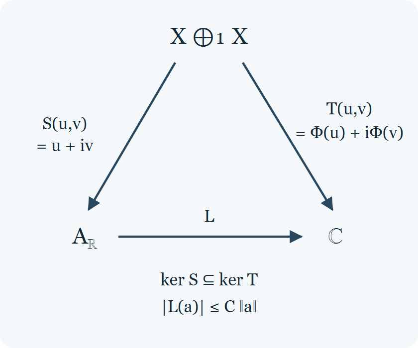

Building representations from positive functionals
Original lesson by Claude Opus 5.5 (Anthropic). Learner routes, explanatory checkpoints and proof self-checks by GPT-6.1 Sol (OpenAI), at Ultra, October 2026. The arbitrary-involution results 4.4a–4.4c, their diagram and checkpoint were written and self-checked by GPT-6 Astra (OpenAI), at Ultra. Original course contributions: CC0. The credited Westerbaan checkpoint and its added solution retain CC BY 4.0.
Suppose a scalar observation \(\omega\) assigns a nonnegative number to every square \(x^*x\). Can we find a Hilbert space, an action of the algebra on it, and a vector whose observation is exactly \(\omega\)? Instead of guessing the Hilbert space, use \(\omega(y^*x)\) as the inner product of the algebra elements themselves. The obstacles are visible: some nonzero elements can have length zero, multiplication must descend to the quotient, and a cyclic vector must represent the original scalar functional.
The route follows these obstacles. We define representations and positive functionals, establish their norm estimates, construct the quotient Hilbert space and its left action, and assemble enough of these actions to obtain a faithful representation of every C*-algebra. Only then do we ask whether an action is irreducible and how a state splits. The later branch treats involutive Banach algebras in full generality: factorization, enveloping C*-algebras, group examples and pure states. The final applications concern compact operators, symmetry and the dimension of the constructed space.
The matrix checkpoint below is adapted from a human-authored exercise. It shows why the null space is a left ideal rather than an algebra ideal. The complete GNS theorem still applies to the stated general involutive Banach algebras; the matrix calculation is an illustration of its mechanism.
The prerequisites are the positive cone, continuous functional calculus, approximate identities and quotients developed in the preceding C*-algebra lesson, and the Hilbert-space and weak-compactness tools in the preliminary lessons. The group applications use the separately proved Haar and covariant-representation providers linked in their proofs.
Conventions
- Algebras. All algebras are complex. A \(*\)-algebra is an algebra with an involution: a conjugate-linear map \(x\mapsto x^*\) with \((xy)^*=y^*x^*\) and \(x^{**}=x\). An involutive Banach algebra is a Banach algebra whose involution is isometric, \(\|x^*\|=\|x\|\), and a C*-algebra is an involutive Banach algebra with \(\|x^*x\|=\|x\|^2\) (Banach algebras and C*-algebras). An identity is not assumed to have norm one. \(A_h\) is the set of self-adjoint elements. For a C*-algebra, \(A_+\) is the cone of positive elements (the positive cone).
- Unitization. For an involutive Banach algebra \(A\), the algebra \(A_1=A\oplus\mathbb C\) with product \((a+\lambda)(b+\mu)=ab+\lambda b+\mu a+\lambda\mu\), involution \((a+\lambda)^*=a^*+\bar\lambda\) and norm \(\|a+\lambda\|=\|a\|+|\lambda|\) is again an involutive Banach algebra, now with an identity of norm \(\|1\|=1\), and \(A\) sits in it as a closed ideal (adjoining an identity).
- Approximate identities. A net \((u_i)\) in \(A\) is an approximate identity if \(u_ix\to x\) and \(xu_i\to x\) for every \(x\in A\), and a left approximate identity if only \(u_ix\to x\) is required. It is bounded by \(\gamma\) if \(\|u_i\|\le\gamma\) for all \(i\). Every C*-algebra has an approximate identity of positive contractions (approximate identities).
- Spectral radius. \(r(x)=\lim_n\|x^n\|^{1/n}\) (the spectral radius formula).
- Hilbert spaces. Hilbert spaces are complex, and inner products \(\langle\xi,\eta\rangle\) are linear in \(\xi\). \(B(H)\) is the C*-algebra of bounded operators on \(H\). For a set \(\mathcal S\subseteq B(H)\), the commutant is \[ \begin{gathered} \mathcal S'\\ =\{T\in B(H):TS=ST\text{ for all }S\in\mathcal S\}. \end{gathered} \] A projection is an operator \(p=p^*=p^2\); each closed subspace is the range of exactly one projection. For \(\eta,\zeta\in H\), \(\theta_{\eta,\zeta}\) is the rank-one operator \(v\mapsto\langle v,\zeta\rangle\eta\); its norm is \(\|\eta\|\|\zeta\|\). \(K(H)\) is the set of compact operators on \(H\) (see "Results used from other lessons").
A. Turn scalar data into vectors and operators
The first definition says what an algebra action must preserve. Positivity then supplies a sesquilinear form, and its Cauchy–Schwarz inequality identifies exactly which vectors must be identified with zero. Norm estimates are needed before left multiplication extends to the Hilbert completion. The square-root argument establishes those estimates in the broader involutive Banach setting; the C*-algebra case has its own automatic-boundedness proof. The worked matrix checkpoint makes the direction of multiplication explicit.
1. Representations
In this section \(A\) is a \(*\)-algebra. No norm on \(A\) is needed.
Definition 1.1. A representation of \(A\) on a Hilbert space \(H\) is a \(*\)-homomorphism \(\pi:A\to B(H)\), that is, a linear map with \(\pi(xy)=\pi(x)\pi(y)\) and \(\pi(x^*)=\pi(x)^*\). We write \((\pi,H)\), or just \(\pi\). A bounded operator \(T:H_1\to H_2\) intertwines representations \((\pi_1,H_1)\) and \((\pi_2,H_2)\) if \(T\pi_1(x)=\pi_2(x)T\) for all \(x\in A\). The two are unitarily equivalent, written \(\pi_1\cong\pi_2\), if some unitary operator intertwines them. A representation is faithful if it is injective. The zero representation on \(H\) sends every element to \(0\).
When \(A\) is an involutive Banach algebra, every representation satisfies \(\|\pi(x)\|\le\|x\|\), and no continuity has to be assumed (\(*\)-homomorphisms are contractive). The proof there uses that the involution is isometric.
Definition 1.2. Let \((\pi,H)\) be a representation.
- A closed subspace \(M\subseteq H\) is invariant if \(\pi(x)M\subseteq M\) for all \(x\in A\). Then \(\pi_M(x)=\pi(x)|_M\) defines a representation on \(M\), a subrepresentation of \(\pi\).
- The essential subspace \(E_\pi\) is the closed linear span of all vectors \(\pi(x)\xi\) with \(x\in A\) and \(\xi\in H\). The null space is \(N_\pi=\{\xi\in H:\pi(x)\xi=0\text{ for all }x\in A\}\). The representation is nondegenerate if \(E_\pi=H\).
- A vector \(\xi\in H\) is cyclic if the subspace \(\pi(A)\xi=\{\pi(x)\xi:x\in A\}\) is dense in \(H\). A representation with a cyclic vector is cyclic.
- Let \((\pi_i,H_i)_{i\in I}\) be representations with \(\sup_i\|\pi_i(x)\|<\infty\) for every \(x\); for involutive Banach algebras this holds automatically. Their direct sum \(\bigoplus_i\pi_i\) acts on the Hilbert space direct sum \(\bigoplus_iH_i\) by \((\xi_i)_i\mapsto(\pi_i(x)\xi_i)_i\). Each such operator has norm at most \(\sup_i\|\pi_i(x)\|\), and the rules of a representation hold coordinate by coordinate. A vector \((\xi_i)_i\) is killed by every \(\bigoplus_i\pi_i(x)\) exactly when each \(\xi_i\) is killed by every \(\pi_i(x)\), so the null space of the direct sum is the direct sum of the null spaces, and by Proposition 1.4(2) below the direct sum is nondegenerate exactly when every summand is.
Lemma 1.3 (Invariant subspaces and the commutant). Let \(\mathcal S\subseteq B(H)\) be a self-adjoint set of operators, that is, \(T^*\in\mathcal S\) whenever \(T\in\mathcal S\). Let \(M\) be a closed subspace with projection \(p\). The following are equivalent:
- (a) \(TM\subseteq M\) for every \(T\in\mathcal S\);
- (b) \(TM^\perp\subseteq M^\perp\) for every \(T\in\mathcal S\);
- (c) \(p\in\mathcal S'\).
In particular, if \(M\) is invariant for a representation \(\pi\), so is \(M^\perp\), and the unitary \(M\oplus M^\perp\to H\), \((\xi,\eta)\mapsto\xi+\eta\), intertwines \(\pi_M\oplus\pi_{M^\perp}\) with \(\pi\).
Proof. (a) ⇒ (b). Let \(\eta\in M^\perp\), \(\xi\in M\) and \(T\in\mathcal S\). Since \(T^*\in\mathcal S\), we get \(\langle T\eta,\xi\rangle=\langle\eta,T^*\xi\rangle=0\). So \(T\eta\in M^\perp\). (b) ⇒ (a). Apply the same argument to \(M^\perp\) and use \(M^{\perp\perp}=M\). (a) and (b) ⇒ (c). Condition (a) says \(pTp=Tp\), and (b) says \((1-p)T(1-p)=T(1-p)\), which simplifies to \(pTp=pT\). Hence \(Tp=pT\). (c) ⇒ (a). If \(\xi\in M\), then \(T\xi=Tp\xi=pT\xi\in M\). The last statement applies this to \(\mathcal S=\pi(A)\), which is self-adjoint because \(\pi(x)^*=\pi(x^*)\). \(\square\)
Proposition 1.4 (The nondegenerate part). Let \((\pi,H)\) be a representation.
- \(N_\pi=E_\pi^\perp\). Both subspaces are invariant, \(\pi\) is unitarily equivalent to \(\pi_{E_\pi}\oplus0\), where \(0\) is the zero representation on \(N_\pi\), and \(\pi_{E_\pi}\) is nondegenerate.
- \(\pi\) is nondegenerate exactly when \(N_\pi=\{0\}\), that is, when every nonzero \(\xi\) has \(\pi(x)\xi\ne0\) for some \(x\).
- If \(\pi\) is nondegenerate, then every \(\xi\in H\) lies in the closure of \(\pi(A)\xi\).
- Suppose that \((u_i)\) is a left approximate identity of the involutive Banach algebra \(A\), bounded by \(\gamma\). Then \(\pi(u_i)\) converges strongly to the projection onto \(E_\pi\). So nondegeneracy of \(\pi\) amounts to \(\pi(u_i)\xi\to\xi\) for every \(\xi\in H\).
Proof. (1) A vector \(\eta\) is orthogonal to every \(\pi(x)\xi\) exactly when \(\langle\pi(x^*)\eta,\xi\rangle=0\) for all \(x\) and \(\xi\), that is, when \(\pi(x^*)\eta=0\) for all \(x\). Since \(x^*\) runs through all of \(A\), this says \(\eta\in N_\pi\). The subspace \(E_\pi\) is invariant because \(\pi(y)\pi(x)\xi=\pi(yx)\xi\), and \(N_\pi\) is invariant because \(\pi(A)\) maps it to \(0\). Lemma 1.3 gives the decomposition. The null space of \(\pi_{E_\pi}\) is \(N_\pi\cap E_\pi=\{0\}\), so \(\pi_{E_\pi}\) is nondegenerate by (2), applied to \(\pi_{E_\pi}\). (2) This is (1). (3) The closure \(M\) of \(\pi(A)\xi\) is invariant; let \(p\) be its projection. By Lemma 1.3, \(p\) commutes with \(\pi(A)\), so \(\pi(x)(1-p)\xi=(1-p)\pi(x)\xi=0\) for every \(x\), because \(\pi(x)\xi\in M\). Thus \((1-p)\xi\in N_\pi=\{0\}\), and \(\xi=p\xi\in M\). (4) Representations of involutive Banach algebras are contractive, so \(\|\pi(u_i)\|\le\gamma\). For a vector \(\pi(x)\xi\) we have \(\|\pi(u_i)\pi(x)\xi-\pi(x)\xi\|\le\|u_ix-x\|\,\|\xi\|\to0\). By linearity, \(\pi(u_i)\eta\to\eta\) for every \(\eta\) in the linear span of such vectors. This span is dense in \(E_\pi\), and the operators \(\pi(u_i)\) are uniformly bounded, so the convergence extends to all \(\eta\in E_\pi\): given \(\varepsilon>0\) and \(\eta'\) in the span with \(\|\eta-\eta'\|<\varepsilon\), we get \(\|\pi(u_i)\eta-\eta\|\le(\gamma+1)\varepsilon+\|\pi(u_i)\eta'-\eta'\|\). On \(N_\pi\) all \(\pi(u_i)\) vanish. \(\square\)
Proposition 1.5 (Decomposition into cyclic representations). Let \((\pi,H)\) be nondegenerate. There is a family \((\xi_j)_{j\in J}\) of nonzero vectors such that the closures \(H_j\) of \(\pi(A)\xi_j\) are pairwise orthogonal and \(H=\bigoplus_jH_j\). Each \(H_j\) is invariant and \(\xi_j\) is a cyclic vector for \(\pi_{H_j}\), so \(\pi\cong\bigoplus_j\pi_{H_j}\) splits into cyclic summands. If \(H\) is separable, \(J\) is countable. An arbitrary representation is the direct sum of a nondegenerate one, which decomposes in this way, and a zero representation.
Proof. Let \(\mathcal F\) be the collection of all sets \(F\) of nonzero vectors such that the closures of \(\pi(A)\xi\) and \(\pi(A)\eta\) are orthogonal for any two distinct \(\xi,\eta\in F\). Order \(\mathcal F\) by inclusion. The union of a chain in \(\mathcal F\) lies in \(\mathcal F\), because the condition concerns two vectors at a time. By Zorn's lemma there is a maximal \(F\in\mathcal F\). For \(\xi\in F\) let \(H_\xi\) be the closure of \(\pi(A)\xi\); it is invariant, and \(\xi\in H_\xi\) by Proposition 1.4(3). Let \(K\) be the closed linear span of the spaces \(H_\xi\), \(\xi\in F\). It is invariant, so \(K^\perp\) is invariant (Lemma 1.3). Suppose \(K^\perp\) contains some \(\eta\ne0\). The closure of \(\pi(A)\eta\) lies in \(K^\perp\), so it is orthogonal to every \(H_\xi\). Moreover \(\eta\notin F\), because every element of \(F\) lies in \(K\). So \(F\cup\{\eta\}\in\mathcal F\), contradicting maximality. Hence \(K=H=\bigoplus_{\xi\in F}H_\xi\). The null space of \(\pi_{H_\xi}\) lies in \(N_\pi=\{0\}\), so \(\pi_{H_\xi}\) is nondegenerate and \(\xi\) is cyclic for it. Lemma 1.3 gives the unitary equivalence. If \(H\) is separable, unit vectors chosen one in each \(H_\xi\) form an orthonormal family, which is countable. The last sentence is Proposition 1.4(1). \(\square\)
Examples 1.6.
- For \(H\ne\{0\}\), the identity representation of \(B(H)\) on \(H\) is nondegenerate, and every nonzero vector \(\xi\) is cyclic, since \(\theta_{\eta,\xi}\xi=\|\xi\|^2\eta\) for every \(\eta\).
- Let \(X\) be a locally compact Hausdorff space, and let \(C_0(X)\) act on \(\ell^2(X)\) by \((\pi(f)\xi)(x)=f(x)\xi(x)\). Each line \(\mathbb C\delta_x\) is invariant, and \(\pi\) is the direct sum of the one-dimensional representations \(f\mapsto f(x)\). It is nondegenerate, because by Urysohn's lemma each \(x\) has some \(f\) with \(f(x)\ne0\), and it is faithful, because \(\pi(f)\delta_x=f(x)\delta_x\). If \(X\) is uncountable, \(\pi\) is not cyclic: a vector \(\xi\in\ell^2(X)\) is supported on a countable set, and so is every \(\pi(f)\xi\).
- The representation \(x\mapsto x\oplus0\) of \(M_n(\mathbb C)\) on \(\mathbb C^n\oplus\mathbb C\) is degenerate, with null space \(0\oplus\mathbb C\). Here the image of the identity is the projection onto the essential subspace, as in Proposition 1.4(4).
3. Positive functionals
In this section \(A\) is a \(*\)-algebra.
Definition 3.1. A linear functional \(\omega\) on \(A\) is positive if \(\omega(x^*x)\ge0\) for every \(x\in A\). The adjoint of a linear functional \(f\) is \(f^*(x)=\overline{f(x^*)}\), and \(f\) is hermitian if \(f^*=f\). For positive \(\psi,\varphi\) we write \(\psi\le\varphi\) if \(\varphi-\psi\) is positive. A positive \(\omega\) is faithful if \(\omega(x^*x)=0\) only for \(x=0\). If \(A\) is normed, a state is a bounded positive functional of norm one.
For a representation \((\pi,H)\) and \(\xi,\eta\in H\), the coefficient functional \(\omega_{\xi,\eta}(x)=\langle\pi(x)\xi,\eta\rangle\) satisfies \(\omega_{\xi,\eta}^*=\omega_{\eta,\xi}\), because \(\overline{\langle\pi(x^*)\xi,\eta\rangle}=\overline{\langle\xi,\pi(x)\eta\rangle}=\langle\pi(x)\eta,\xi\rangle\). The vector functional \(\omega_\xi=\omega_{\xi,\xi}\) is positive, since \(\omega_\xi(x^*x)=\|\pi(x)\xi\|^2\).
Proposition 3.2 (Cauchy–Schwarz). Let \(\omega\) be a positive functional on \(A\). For all \(x,y\in A\), \[ \begin{gathered} \omega(y^*x)\\ =\overline{\omega(x^*y)},\\ |\omega(y^*x)|^2\\ \le\omega(x^*x)\,\omega(y^*y). \end{gathered} \tag{3.1} \] If \(A\) has an identity, then \(\omega(x^*)=\overline{\omega(x)}\) and \(|\omega(x)|^2\le\omega(1)\,\omega(x^*x)\).
Proof. Put \([x,y]=\omega(y^*x)\). It is linear in \(x\), conjugate linear in \(y\), and \(q(x)=[x,x]\ge0\). Expanding \(q(x+i^ky)\) for \(k=0,1,2,3\) and summing with weights \(i^k\) gives the polarization identity \(4[x,y]=\sum_{k=0}^3i^k\,q(x+i^ky)\). Exchanging \(x\) and \(y\), and using \(q(y+i^kx)=q(x+i^{-k}y)\) (multiply the vector by \(i^{-k}\), a scalar of modulus one), gives \(4[y,x]=\sum_ki^kq(x+i^{-k}y)=\overline{4[x,y]}\), because each \(q\) is real. This is the first identity. For the inequality, let \(t\in\mathbb R\) and \(\lambda=-t[x,y]\). Then \[ \begin{gathered} 0\\ \le q(x+\lambda y)\\ =q(x)-2t|[x,y]|^2+t^2|[x,y]|^2q(y). \end{gathered} \] If \(q(y)=0\), letting \(t\to\infty\) forces \([x,y]=0\). If \(q(y)>0\), take \(t=1/q(y)\) to get \(|[x,y]|^2\le q(x)q(y)\). In the unital case, \(1^*\) is also an identity, so \(1^*=1\), and we take \(y=1\). \(\square\)
Lemma 3.3 (The left kernel). Let \(\omega\) be positive and \(N_\omega=\{x\in A:\omega(x^*x)=0\}\). Then \(N_\omega=\{x\in A:\omega(y^*x)=0\text{ for all }y\in A\}\), and \(N_\omega\) is a left ideal of \(A\). Likewise \(\{x:\omega(xx^*)=0\}=N_\omega^*\) is a right ideal.
Proof. If \(\omega(x^*x)=0\), then \(\omega(y^*x)=0\) for all \(y\) by (3.1); for the converse take \(y=x\). The second description shows that \(N_\omega\) is a linear subspace. If \(x\in N_\omega\) and \(a\in A\), then \(\omega(y^*ax)=\omega((a^*y)^*x)=0\) for all \(y\), so \(ax\in N_\omega\). The involution turns left ideals into right ideals. \(\square\)
We call \(N_\omega\) the left kernel of \(\omega\).
Examples 3.4.
- Vector functionals are positive.
- Let \(X\) be a locally compact Hausdorff space and \(\mu\) a finite positive Radon measure on \(X\). Then \(\omega_\mu(f)=\int f\,d\mu\) is a positive functional on \(C_0(X)\), since \(\omega_\mu(\bar ff)=\int|f|^2d\mu\). It is faithful exactly when every nonempty open set has positive measure. If some nonempty open \(U\) has \(\mu(U)=0\), Urysohn's lemma gives \(f\ne0\) vanishing outside \(U\), with \(\omega_\mu(\bar ff)=0\). Conversely, if \(f\ne0\), then \(|f|^2>c>0\) on some nonempty open set, which has positive measure.
- Every linear functional on \(M_n(\mathbb C)\) has the form \(\omega_\rho(x)=\operatorname{Tr}(\rho x)\) for exactly one matrix \(\rho\), because the pairing \((\rho,x)\mapsto\operatorname{Tr}(\rho x)\) is nondegenerate. It is positive if and only if \(\rho\ge0\). If \(\rho\ge0\), then \(\operatorname{Tr}(\rho x^*x)=\operatorname{Tr}(x\rho x^*)\ge0\). Conversely, for \(\xi\ne0\) the operator \(\theta_{\xi,\xi}=\|\xi\|^{-2}\theta_{\xi,\xi}^*\theta_{\xi,\xi}\) is of the form \(x^*x\), and \(\omega_\rho(\theta_{\xi,\xi})=\langle\rho\xi,\xi\rangle\). A positive \(\omega_\rho\) is faithful exactly when \(\rho\) is invertible: if \(\rho\ge c1\) with \(c>0\), then \(\operatorname{Tr}(x\rho x^*)\ge c\operatorname{Tr}(xx^*)\), and if \(\rho\xi=0\) with \(\xi\ne0\), then \(\omega_\rho(\theta_{\xi,\xi}^*\theta_{\xi,\xi})=\|\xi\|^2\langle\rho\xi,\xi\rangle=0\).
- (Zero products.) Let \(E\) be a Banach space with an isometric conjugate-linear map \(x\mapsto x^*\) satisfying \(x^{**}=x\), and make it an involutive Banach algebra with the zero product \(xy=0\). Every \(x^*x\) is \(0\), so every linear functional is positive. On \(E=\mathbb C\) with complex conjugation, \(\omega(x)=ix\) is positive but not hermitian: \(\omega(1^*)=i\) while \(\overline{\omega(1)}=-i\). On an infinite-dimensional \(E\), such as \(\ell^2(\mathbb N)\) with coordinatewise conjugation, any linear functional that is not continuous (Example 6.5) is positive. So without an identity or an approximate identity, positivity implies neither the hermitian property nor continuity.
4. Continuity and norms of positive functionals
Throughout this section, \(A\) denotes an involutive Banach algebra.
Algebras with an identity
Lemma 4.1 (Square roots near the identity). Let \(A\) be unital and \(a\in A\) with \(r(1-a)<1\). Put \(c_0=1\) and \(c_n=\binom{1/2}{n}=\frac{(1/2)(1/2-1)\cdots(1/2-n+1)}{n!}\) for \(n\geq1\); the coefficient identity needed below is proved in the final background list. The series \(b=\sum_{n\ge0}c_n(a-1)^n\) converges absolutely in \(A\), \(b^2=a\), and \(b\) commutes with every element that commutes with \(a\). If \(a=a^*\), then \(b=b^*\).
Proof. We have \(c_0=1\) and \(|c_{n+1}|=|c_n|\,|\tfrac12-n|/(n+1)\le|c_n|\), so \(|c_n|\le1\). Choose \(q\) with \(r(1-a)<q<1\). By the spectral radius formula, \(\|(a-1)^n\|\le q^n\) for all large \(n\), so \(\sum_n|c_n|\|(a-1)^n\|<\infty\). The finite Vandermonde identity proved in the background list gives \(\sum_{k=0}^nc_kc_{n-k}=1\) for \(n=0,1\) and \(\sum_{k=0}^nc_kc_{n-k}=0\) for \(n\ge2\). Lemma 0.1 of the Banach-algebra lesson proves that the Cauchy product of absolutely convergent series can be regrouped, so \[ \begin{gathered} b^2\\ =\sum_n\big(\sum_kc_kc_{n-k}\big)(a-1)^n\\ =1+(a-1)\\ =a. \end{gathered} \] The partial sums commute with every element commuting with \(a\), and so does their limit. If \(a=a^*\), the partial sums are self-adjoint because the \(c_n\) are real, and the involution is continuous, so \(b^*=b\). \(\square\)
Proposition 4.2 (Positive functionals on unital algebras). Let \(A\) be unital and \(\omega\) positive.
- For \(h\in A_h\), \(\omega(h)\) is real and \(-r(h)\,\omega(1)\le\omega(h)\le r(h)\,\omega(1)\).
- For \(x\in A\), \[ \begin{gathered} |\omega(x)|^2\\ \le\omega(1)\,\omega(x^*x)\\ \le\omega(1)^2\,r(x^*x)\\ \le\omega(1)^2\|x\|^2. \end{gathered} \]
- \(\omega\) is bounded, and \(\|\omega\|\le\omega(1)\le\|1\|\,\|\omega\|\). In particular \(\|\omega\|=\omega(1)\) when \(\|1\|=1\).
Proof. (1) \(\omega(h)=\omega(h^*)=\overline{\omega(h)}\) by Proposition 3.2. Let \(t>r(h)\) and \(a=1-t^{-1}h\). Then \(r(1-a)=t^{-1}r(h)<1\), so \(a=b^2\) with \(b=b^*\) by Lemma 4.1, and \(\omega(1)-t^{-1}\omega(h)=\omega(b^*b)\ge0\). Letting \(t\) decrease to \(r(h)\) gives \(\omega(h)\le r(h)\omega(1)\). Apply this to \(-h\), which has the same spectral radius. (2) The first inequality is Proposition 3.2. The second is (1) for \(h=x^*x\). The third holds because \(r(x^*x)\le\|x^*x\|\le\|x^*\|\|x\|=\|x\|^2\). (3) By (2), \(|\omega(x)|\le\omega(1)\|x\|\). And \(\omega(1)\le\|\omega\|\|1\|\). \(\square\)
Example 4.3 (The norm of the identity matters). Let \(A=\mathbb C^2\) with coordinatewise product and conjugation and the norm \(\|(a,b)\|=|a|+|b|\). It is an involutive Banach algebra whose identity \((1,1)\) has norm \(2\). The functional \(\omega(a,b)=a+b\) is positive, since \(\omega(|a|^2,|b|^2)=|a|^2+|b|^2\). But \(\|\omega\|=\sup|a+b|/(|a|+|b|)=1\), while \(\omega(1)=2\). So \(\|\omega\|<\omega(1)\) can happen when \(\|1\|>1\), and the second inequality in Proposition 4.2(3) is attained here.
Without a continuity assumption on the involution
Remark 4.4 (Two different continuity questions). Positivity forces a linear functional to be continuous on a unital Banach algebra even when the involution itself is not continuous. In this subsection alone, the involution is assumed only to satisfy the algebraic rules in the conventions. The norm is submultiplicative and complete, but no bound on \(a^*\) is assumed. The identity need not have norm one. Jordan Bell's freely readable notes on positive linear functionals discuss this distinction. We give the square-root and functional-continuity arguments below using the programme's earlier proofs.
The difficulty is concrete: a norm limit of self-adjoint elements need not be self-adjoint when the involution is discontinuous. Thus the last sentence of the proof of Lemma 4.1 cannot be used here. Spectra provide a way to identify the root instead.
Lemma 4.4a (Self-adjoint roots by spectral separation). Let \(A\ne\{0\}\) be a unital complex Banach algebra with an algebraic involution. If \(a=a^*\) and \[ \sigma_A(a)\cap(-\infty,0]=\varnothing, \] then there is a self-adjoint \(b\) with \(b^2=a\). It is the unique square root of \(a\) whose spectrum lies in the open right half-plane, and it commutes with every element commuting with \(a\).
Proof. First \(1^*=1\): taking adjoints of the two identity laws shows that \(1^*\) is an identity. If \(x\) is invertible, then \((x^{-1})^*\) is the inverse of \(x^*\), by taking adjoints of both inverse identities. Therefore \[ \sigma_A(x^*)=\overline{\sigma_A(x)}. \tag{4.4a} \] These are algebraic statements, not continuity statements.
On \(U=\mathbb C\setminus(-\infty,0]\), define \[ \begin{gathered} u(z)=\sqrt{\frac{|z|+\operatorname{Re}z}{2}},\\ f(z)=u(z)+\frac{i\operatorname{Im}z}{2u(z)}. \end{gathered} \] Here \(u(z)>0\). Direct multiplication gives \(f(z)^2=z\), and \(f\) is continuous with positive real part. For nonzero \(t\) small enough that \(z+t\in U\), \[ \begin{aligned} \frac{f(z+t)-f(z)}{t} &=\frac{1}{f(z+t)+f(z)}\\ &\longrightarrow\frac{1}{2f(z)}. \end{aligned} \] Thus \(f\) is holomorphic on \(U\). Apply the programme's holomorphic functional calculus and spectral mapping theorem. The element \(b=f(a)\) satisfies \(b^2=a\) and \(\sigma_A(b)=f(\sigma_A(a))\), which lies in the open right half-plane. By Proposition 6.5(4) of the Banach-algebra lesson, \(b\) commutes with everything commuting with \(a\).
We check uniqueness without taking an adjoint through the calculus. Suppose \(c^2=a\) and \(\sigma_A(c)\) also lies in that half-plane. Since \(c\) commutes with its square \(a\), it commutes with \(b\). Let \(B\) be the closed unital subalgebra generated by \(b,c\) and all the resolvents \[ \begin{gathered} (\lambda1-b)^{-1},\quad(\mu1-c)^{-1},\\ \lambda\notin\sigma_A(b),\quad\mu\notin\sigma_A(c). \end{gathered} \] All these generators commute. Indeed, an element commuting with an invertible element also commutes with its inverse, by multiplying the commutation identity on both sides by that inverse. Thus \(B\) is a commutative Banach algebra. Its spectra of \(b\) and \(c\) are exactly their spectra in \(A\): invertibility in \(B\) implies invertibility in \(A\), and every required resolvent in the reverse direction was included among the generators.
For each character \(\chi\) of \(B\), both \(\chi(b)\) and \(\chi(c)\) have positive real part. Hence \(\chi(b+c)\ne0\). The character criterion for invertibility makes \(b+c\) invertible in \(B\), and therefore in \(A\). Consequently \[ (b-c)(b+c)=b^2-c^2=0 \quad\Longrightarrow\quad b=c. \] Now \((b^*)^2=a^*=a\), and (4.4a) places \(\sigma_A(b^*)\) in the same half-plane. Uniqueness gives \(b^*=b\). No continuity of the involution has been used. \(\square\)
Theorem 4.4b (Automatic continuity with an arbitrary involution). Let \(A\) be a unital complex Banach algebra with an algebraic involution, and let \(\omega:A\to\mathbb C\) be complex linear with \(\omega(x^*x)\ge0\) for every \(x\in A\). Then \(\omega\) is continuous. More precisely, there is a finite constant \(C\), depending only on the normed algebra and its involution, such that \[ \begin{gathered} |\omega(a)|\le C\omega(1)\|a\|\\ (a\in A) \end{gathered} \tag{4.4b} \] for every such \(\omega\). If \(\omega(1)=0\), then \(\omega=0\).
Proof. The zero algebra is immediate; assume \(A\ne\{0\}\). The algebraic proof of Proposition 3.2 gives the hermitian property and Cauchy–Schwarz without any topological assumption. In particular \(\omega(1)\ge0\) and \[ |\omega(a)|^2\le\omega(1)\omega(a^*a). \] If \(\omega(1)=0\), this proves the assertion. Otherwise put \(F=\omega/\omega(1)\), so \(F(1)=1\).
For \(h=h^*\) and real \(R>r(h)\), the spectra of \(R1+h\) and \(R1-h\) lie in the open right half-plane. Lemma 4.4a writes each as a self-adjoint square, so positivity gives \[ -R\le F(h)\le R. \] Letting \(R\downarrow r(h)\) yields \[ \begin{gathered} F(h)\in\mathbb R,\\ |F(h)|\le r(h)\le\|h\|. \end{gathered} \tag{4.4c} \]
Let \(H=\{h\in A:h=h^*\}\), a real linear subspace, and let \(X=\overline H\), with closure in the given norm. Estimate (4.4c) extends \(F|_H\) uniquely to a bounded real-linear map \(\Phi:X\to\mathbb R\), of norm at most one. Explicitly, for \(h_n\to x\) in \(H\), the estimate on \(h_n-h_m\) makes \(F(h_n)\) Cauchy; its limit is independent of the approximating sequence and defines \(\Phi(x)\). We have not yet proved that \(\Phi\) agrees with \(F\) at points of \(X\setminus H\).
The key fact is that \(\Phi\) vanishes on \(X\cap iX\). For \(z\) in this intersection choose \(u_n,v_n\in H\) with \(u_n\to z\) and \(v_n\to-iz\). Continuity of multiplication gives \[ u_n^2+v_n^2\longrightarrow z^2+(-iz)^2=0. \] Each summand has nonnegative \(F\)-value. Cauchy–Schwarz and (4.4c), applied to the self-adjoint sum, give \[ \begin{aligned} |F(u_n)|^2 &\le F(u_n^2)\\ &\le F(u_n^2+v_n^2)\\ &\le\|u_n^2+v_n^2\|\longrightarrow0. \end{aligned} \] By the definition of \(\Phi\), this proves \(\Phi(z)=0\).
Consider the bounded real-linear map \[ \begin{aligned} S:X\oplus_1X&\longrightarrow A_{\mathbb R},\\ S(u,v)&=u+iv,\\ \|(u,v)\|_1&=\|u\|+\|v\|. \end{aligned} \] Its domain is Banach: a Cauchy sequence is Cauchy in both closed-subspace coordinates, and the two coordinate limits give convergence in the sum norm. Its codomain is the underlying real Banach space of \(A\). It is onto, since the algebraic decomposition \[ a=\frac{a+a^*}{2} +i\frac{a-a^*}{2i} \] has both components in \(H\subseteq X\). The programme's open mapping theorem supplies \(\delta>0\) such that \(S\) maps its open unit ball onto a set containing the ball of radius \(\delta\). Scaling by \(2\|a\|/\delta\), for \(a\ne0\), gives some decomposition \(a=u+iv\) with \[ \begin{gathered} \|u\|+\|v\|\le C\|a\|,\\ C=2/\delta. \end{gathered} \tag{4.4d} \] For \(a=0\), take both components zero. The constant depends on \(S\), not on \(F\).
Define \(T(u,v)=\Phi(u)+i\Phi(v)\). If \(S(u,v)=0\), then \(u=-iv\) and \(v=iu\), so both \(u\) and \(v\) lie in \(X\cap iX\). Thus \(T(u,v)=0\). This proves that \[ L(a)=\Phi(u)+i\Phi(v),\qquad a=u+iv, \] is independent of the chosen decomposition. It is real-linear, and replacing \((u,v)\) by \((-v,u)\) shows \(L(ia)=iL(a)\); hence it is complex-linear. Formula (4.4d) implies \(|L(a)|\le C\|a\|\). Finally choose the original algebraic decomposition in \(H+iH\). Since \(\Phi|_H=F|_H\), complex linearity of \(F\) gives \(L(a)=F(a)\). Therefore \(F\), and then \(\omega\), is continuous, with (4.4b). \(\square\)

The descent in Theorem 4.4b. The arrows are real-linear during the construction. The condition \(\ker S\subseteq\ker T\) defines \(L\) independently of a decomposition; the open mapping estimate makes it bounded. The proof then checks complex linearity and identifies \(L\) with \(F\). This diagram depicts maps, not an orthogonal decomposition of \(A\).
Corollary 4.4c (Spectral estimates and familiar special cases). Under the assumptions of Theorem 4.4b, \[ \begin{aligned} |\omega(x)|^2 &\le\omega(1)\omega(x^*x)\\ &\le\omega(1)^2 r(x^*x). \end{aligned} \] If \(x\) is normal, then \(|\omega(x)|\le\omega(1)r(x)\). If \(\|x^*\|\le\beta\|x\|\) for all \(x\), then \(\|\omega\|\le\sqrt\beta\,\omega(1)\). If \(A\) is commutative, then \[ \|\omega\|\le\omega(1)\le\|1\|\,\|\omega\|; \] in particular \(\|\omega\|=\omega(1)\) when \(\|1\|=1\), even without a continuous involution.
Proof. Apply (4.4c), scaled back from \(F\) to \(\omega\), to the self-adjoint element \(x^*x\); combine it with algebraic Cauchy–Schwarz. If \(x\) commutes with \(x^*\), form the closed commutative algebra generated by both elements and their resolvents, exactly as in Lemma 4.4a. For every character \(\chi\), \[ \begin{aligned} |\chi(x^*x)|&=|\chi(x^*)\chi(x)|\\ &\le r_A(x^*)r_A(x)=r_A(x)^2. \end{aligned} \] The character criterion identifies the spectrum of \(x^*x\) in this commutative algebra; its spectrum in \(A\) is contained in that spectrum. Thus \(r_A(x^*x)\le r_A(x)^2\), which proves the normal-element estimate. The bounded-involution estimate follows instead from \(r(x^*x)\le\|x^*\|\|x\|\le\beta\|x\|^2\). In a commutative algebra every element is normal, so the normal-element estimate gives \(\|\omega\|\le\omega(1)\); evaluation at the identity gives the other inequality. \(\square\)
Checkpoint (with solution). Why would either of the following shortcuts be invalid: declaring \(H\) closed because it consists of self-adjoint elements, or identifying \(\Phi(z)\) with \(F(z)\) before constructing \(L\)?
Solution. The first would use continuity of the involution, which is not assumed. The second would use continuity of \(F\), which is the conclusion. We only extend the already bounded restriction \(F|_H\). The vanishing argument on \(X\cap iX\) and the open mapping theorem then prove the needed agreement on all of \(A\). Without an identity the theorem need not hold: in the infinite-dimensional zero-product example 3.4(4), every linear functional is positive, including discontinuous ones.
From the next paragraph onward, “involutive Banach algebra” again has the isometric-involution meaning fixed in the conventions. The broader theorem does not silently change the hypotheses of the GNS estimates that follow.
Compressed functionals
Lemma 4.5. Let \(\omega\) be a positive functional on \(A\); no identity and no continuity are assumed. For every \(a\in A\) the functional \(\omega_a(x)=\omega(axa^*)\) is positive and bounded, with \(\|\omega_a\|\le\omega(aa^*)\). Consequently \[ \begin{gathered} \omega(x^*a^*ax)\\ \le\|a\|^2\,\omega(x^*x)\\ (a,x\in A). \end{gathered} \tag{4.1} \]
Proof. Since \(A\) is an ideal in the unitization \(A_1\), the formula \(z\mapsto\omega(aza^*)\) defines a linear functional on \(A_1\). It is positive, because \(\omega(az^*za^*)=\omega\big((za^*)^*(za^*)\big)\ge0\) with \(za^*\in A\). Its value at \(1\) is \(\omega(aa^*)\), and \(\|1\|=1\) in \(A_1\), so Proposition 4.2(3) gives \(|\omega(aza^*)|\le\omega(aa^*)\|z\|\) for \(z\in A_1\), in particular for \(z\in A\). For (4.1), apply this with \(x^*\) in place of \(a\) and \(z=a^*a\): the number \(\omega(x^*a^*ax)\) is the value of the positive functional \(\omega_{x^*}\) at \(a^*a\), so it is at most \(\omega(x^*x)\|a^*a\|\le\omega(x^*x)\|a\|^2\). \(\square\)
Algebras with an approximate identity
Proposition 4.6. Let \(A\) have an approximate identity \((u_i)\) bounded by \(\gamma\), and let \(\omega\) be positive and continuous. Then \(\omega\) is hermitian, and \[ \begin{gathered} |\omega(x)|^2\\ \le\gamma^2\|\omega\|\,\omega(x^*x)\\ (x\in A). \end{gathered} \tag{4.2} \]
Proof. The involution is isometric, so \(\|u_i^*x-x\|=\|x^*u_i-x^*\|\to0\) for every \(x\). By continuity and (3.1), \(\omega(x^*)=\lim_i\omega(x^*u_i)=\lim_i\overline{\omega(u_i^*x)}=\overline{\omega(x)}\). Also \(|\omega(u_i^*x)|^2\le\omega(u_i^*u_i)\,\omega(x^*x)\le\gamma^2\|\omega\|\,\omega(x^*x)\), and \(\omega(u_i^*x)\to\omega(x)\). \(\square\)
Section 6 shows that the continuity assumption is automatic. Without an approximate identity both conclusions can fail (Example 3.4(4)).
C*-algebras
Theorem 4.7. Let \(A\) be a C*-algebra and \(\omega\) a positive linear functional on \(A\).
- \(\omega\) is bounded. More precisely, \(M=\sup\{\omega(a):a\in A_+,\ \|a\|\le1\}\) is finite and \(\|\omega\|\le2M\).
- If \((u_i)\) is a net of positive contractions with \(u_ix\to x\) for every \(x\), then \(\|\omega\|=\lim_i\omega(u_i)=M\). If \(A\) is unital and nonzero, \(\|\omega\|=\omega(1)\).
- \(\omega\) is hermitian, and \(|\omega(x)|^2\le\|\omega\|\,\omega(x^*x)\).
- If \(\psi\) is also positive, then \(\|\omega+\psi\|=\|\omega\|+\|\psi\|\).
Proof. (1) Suppose \(M=\infty\). Choose \(a_n\in A_+\) with \(\|a_n\|\le1\) and \(\omega(a_n)\ge4^n\). The series \(a=\sum_n2^{-n}a_n\) converges, and \(a\) and each \(a-2^{-n}a_n\) lie in the closed convex cone \(A_+\) (the positive cone). Hence \(\omega(a)\ge2^{-n}\omega(a_n)\ge2^n\) for every \(n\), which is impossible. So \(M<\infty\). A self-adjoint \(h\) with \(\|h\|\le1\) is \(h_+-h_-\) with \(h_\pm\in A_+\) and \(\|h_\pm\|\le1\) (same link), so \(\omega(h)=\omega(h_+)-\omega(h_-)\) is a difference of two numbers in \([0,M]\), and \(|\omega(h)|\le M\). An arbitrary \(x\) with \(\|x\|\le1\) is \(x_1+ix_2\) with self-adjoint \(x_j\) of norm at most \(1\) (self-adjoint, normal and unitary elements). So \(|\omega(x)|\le2M\). (2) Clearly \(\omega(u_i)\le M\le\|\omega\|\). Let \(\|x\|\le1\). By continuity, \(\omega(x)=\lim_i\omega(u_ix)\). By (3.1), \(|\omega(u_ix)|^2\le\omega(u_i^2)\,\omega(x^*x)\), and \(\omega(x^*x)\le\|\omega\|\). Since \(0\le u_i\le1\), the functional calculus gives \(u_i^2\le u_i\), so \(\omega(u_i^2)\le\omega(u_i)\). Hence \(|\omega(x)|^2\le\|\omega\|\liminf_i\omega(u_i)\), and taking the supremum over \(x\) gives \(\|\omega\|\le\liminf_i\omega(u_i)\) when \(\omega\ne0\). Together, \(\lim_i\omega(u_i)=M=\|\omega\|\). Such nets exist, for instance an approximate identity of positive contractions. In the unital case take the constant net \(u_i=1\), which has norm one. (3) This is Proposition 4.6 with \(\gamma=1\), applied to an approximate identity of positive contractions. (4) Apply (2) to \(\omega\), \(\psi\) and \(\omega+\psi\) with the same net. \(\square\)
The argument of (1) also shows that every positive linear map between C*-algebras is bounded; see Completely positive maps.
Worked checkpoint: a state's seminorm remembers one column
Adapted from A. A. Westerbaan, The Category of Von Neumann Algebras (2019), supplied LaTeX source, under CC BY 4.0. This worked checkpoint, including its adaptation and added solution, retains that licence. The adaptation uses this course's inner product convention and supplies the calculations.
On \(M_2(\mathbb C)\), take the vector state \(\omega(a)=\langle ae_1,e_1\rangle\), where \(e_1=(1,0)\). Its seminorm is \(\|a\|_\omega=\omega(a^*a)^{1/2}=\|ae_1\|\). Thus it remembers the first column and forgets the second. The triangle inequality follows from the vector norm; the same formula gives \(|\omega(b^*a)|\le\|a\|_\omega\|b\|_\omega\) by Hilbert-space Cauchy–Schwarz.
Put \[ p=\frac12\begin{pmatrix}1&1\\1&1\end{pmatrix},\qquad q=\begin{pmatrix}0&0\\0&1\end{pmatrix}. \] Both are orthogonal projections, hence have operator norm one. Direct multiplication gives \(p^2=p\), \(\|p\|_\omega=1/\sqrt2\), \(\|q\|_\omega=0\), and \[ qp=\frac12\begin{pmatrix}0&0\\1&1\end{pmatrix},\qquad \|qp\|_\omega=\frac12. \] Consequently the estimate \(\|ab\|_\omega\le\|a\|_\omega\|b\|\) fails with \(a=q,b=p\); so does the estimate with \(\|b\|_\omega\) on the right. Also \(\|p^*p\|_\omega=1/\sqrt2\ne\|p\|_\omega^2=1/2\). The seminorm is not a C*-norm. Taking \(a=e_{12}\) gives \(\|a\|_\omega=0\) but \(\|a^*\|_\omega=1\), so the null space is not self-adjoint.
The correct estimate has the factors in the opposite roles: \(\|ab\|_\omega=\|abe_1\|\le\|a\|\|be_1\|=\|a\|\|b\|_\omega\). It implies that the null space is stable under multiplication on the left. In this example the map \(a+N_\omega\mapsto ae_1\) is well defined and isometric. It is onto \(\mathbb C^2\), because every vector is the first column of some matrix. Under this identification the GNS action is the usual matrix action and the cyclic vector is \(e_1\). This is the entire construction in a model we can compute. Lemma 4.5 supplies the corresponding multiplication estimate in the general involutive Banach algebra.
5. The Gelfand–Naimark–Segal construction
Throughout this section, \(A\) denotes an involutive Banach algebra. We fix a positive functional \(\omega\) on \(A\), not assumed to be continuous.
Construction 5.1. By Lemma 3.3, the left kernel \(N_\omega\) is a left ideal, and \(\omega(y^*x)=0\) whenever \(x\in N_\omega\) or \(y\in N_\omega\); for \(y\in N_\omega\) use the first identity in (3.1). So \[ \langle x+N_\omega,\,y+N_\omega\rangle=\omega(y^*x) \tag{5.1} \] is a well-defined inner product on the quotient space \(A/N_\omega\); it is positive definite by the definition of \(N_\omega\). The completion lemma in Section 1 of the Hilbert-space lesson constructs the Hilbert completion \(H_\omega\). Let \(\Lambda_\omega:A\to H_\omega\), \(\Lambda_\omega(x)=x+N_\omega\). Then \(\Lambda_\omega\) is linear with dense range, and \(\langle\Lambda_\omega(x),\Lambda_\omega(y)\rangle=\omega(y^*x)\).
Lemma 5.2. For each \(a\in A\) there is exactly one \(\pi_\omega(a)\in B(H_\omega)\) with \(\pi_\omega(a)\Lambda_\omega(x)=\Lambda_\omega(ax)\) for all \(x\in A\). It satisfies \(\|\pi_\omega(a)\|\le\|a\|\), and \(\pi_\omega\) is a representation of \(A\) on \(H_\omega\).
Proof. By (4.1), \(\|\Lambda_\omega(ax)\|^2=\omega(x^*a^*ax)\le\|a\|^2\|\Lambda_\omega(x)\|^2\). So \(\Lambda_\omega(x)\mapsto\Lambda_\omega(ax)\) is well defined on \(\Lambda_\omega(A)\) (if \(\Lambda_\omega(x)=0\), then \(\Lambda_\omega(ax)=0\)), linear, and bounded by \(\|a\|\). It extends uniquely to \(H_\omega\). The identities \(\pi_\omega(ab)=\pi_\omega(a)\pi_\omega(b)\) and linearity in \(a\) hold on \(\Lambda_\omega(A)\), hence everywhere. Finally \[ \begin{gathered} \langle\pi_\omega(a)\Lambda_\omega(x),\Lambda_\omega(y)\rangle\\ =\omega(y^*ax)\\ =\omega((a^*y)^*x)\\ =\langle\Lambda_\omega(x),\pi_\omega(a^*)\Lambda_\omega(y)\rangle, \end{gathered} \] and density gives \(\pi_\omega(a)^*=\pi_\omega(a^*)\). \(\square\)
Theorem 5.3 (When the construction has a cyclic vector). The following are equivalent:
- (i) there are a representation \((\pi,H)\) of \(A\) and a vector \(\xi\in H\) with \(\omega(x)=\langle\pi(x)\xi,\xi\rangle\) for all \(x\);
- (ii) there is a constant \(C\) with \(|\omega(x)|^2\le C\,\omega(x^*x)\) for all \(x\);
- (iii) there is a vector \(\xi_\omega\in H_\omega\) with \(\omega(x)=\langle\Lambda_\omega(x),\xi_\omega\rangle\) for all \(x\).
When they hold, \(\xi_\omega\) is unique, \(\pi_\omega(x)\xi_\omega=\Lambda_\omega(x)\) for all \(x\), \(\xi_\omega\) is a cyclic vector for \(\pi_\omega\), and \(\omega(x)=\langle\pi_\omega(x)\xi_\omega,\xi_\omega\rangle\). The smallest possible \(C\) in (ii) is \(\|\xi_\omega\|^2\). Moreover \(\omega\) is hermitian and bounded, with \(\|\omega\|\le\|\xi_\omega\|^2\).
We call \(\omega\) representable when these conditions hold.
Proof. (i) ⇒ (ii). \[ \begin{gathered} |\omega(x)|^2\\ =|\langle\pi(x)\xi,\xi\rangle|^2\\ \le\|\pi(x)\xi\|^2\|\xi\|^2\\ =\|\xi\|^2\omega(x^*x). \end{gathered} \] (ii) ⇒ (iii). If \(x\in N_\omega\), then \(|\omega(x)|^2\le C\omega(x^*x)=0\). So \(\ell(\Lambda_\omega(x))=\omega(x)\) is a well-defined linear functional on \(\Lambda_\omega(A)\), with \(|\ell(\Lambda_\omega(x))|\le C^{1/2}\|\Lambda_\omega(x)\|\). It extends to a bounded functional on \(H_\omega\), which by the Riesz representation theorem is \(\zeta\mapsto\langle\zeta,\xi_\omega\rangle\) for a unique \(\xi_\omega\), with \(\|\xi_\omega\|\le C^{1/2}\). (iii) ⇒ (i). For \(x,y\in A\), \[ \begin{gathered} \langle\Lambda_\omega(x),\pi_\omega(y)\xi_\omega\rangle\\ =\langle\Lambda_\omega(y^*x),\xi_\omega\rangle\\ =\omega(y^*x)\\ =\langle\Lambda_\omega(x),\Lambda_\omega(y)\rangle, \end{gathered} \] and since \(\Lambda_\omega(A)\) is dense, \(\pi_\omega(y)\xi_\omega=\Lambda_\omega(y)\). Hence \(\omega(x)=\langle\Lambda_\omega(x),\xi_\omega\rangle=\langle\pi_\omega(x)\xi_\omega,\xi_\omega\rangle\), which is (i). The remaining claims. The vector \(\xi_\omega\) is determined by (iii) because \(\Lambda_\omega(A)\) is dense, and \(\pi_\omega(A)\xi_\omega=\Lambda_\omega(A)\) is dense. From (iii), \(|\omega(x)|^2\le\|\xi_\omega\|^2\|\Lambda_\omega(x)\|^2=\|\xi_\omega\|^2\omega(x^*x)\), so \(C=\|\xi_\omega\|^2\) works; and if \(C\) works, the proof of (ii) ⇒ (iii) gives \(\|\xi_\omega\|^2\le C\). Finally \(\omega(x^*)=\langle\pi_\omega(x)^*\xi_\omega,\xi_\omega\rangle=\overline{\omega(x)}\), and \(|\omega(x)|\le\|\pi_\omega(x)\|\|\xi_\omega\|^2\le\|x\|\|\xi_\omega\|^2\). \(\square\)
Theorem 5.4 (GNS with an approximate identity). Let \(A\) have an approximate identity \((u_i)\) bounded by \(\gamma\), and let \(\omega\) be positive and continuous. Then \(\omega\) is representable, \(\|\omega\|\le\|\xi_\omega\|^2\le\gamma^2\|\omega\|\), and \(\xi_\omega=\lim_i\Lambda_\omega(u_i)\). If \(\gamma=1\), in particular if \(A\) is a C*-algebra, then \(\|\xi_\omega\|^2=\|\omega\|\). If \(A\) is unital, every positive \(\omega\) is representable, with \(\xi_\omega=\Lambda_\omega(1)\) and \(\|\xi_\omega\|^2=\omega(1)\).
Proof. (4.2) is condition (ii) of Theorem 5.3 with \(C=\gamma^2\|\omega\|\), and the bounds follow from that theorem. The representation \(\pi_\omega\) has the cyclic vector \(\xi_\omega\), so it is nondegenerate, and Proposition 1.4(4) gives \(\Lambda_\omega(u_i)=\pi_\omega(u_i)\xi_\omega\to\xi_\omega\). A C*-algebra has an approximate identity of positive contractions, and its positive functionals are continuous (Theorem 4.7). In the unital case, \(\langle\Lambda_\omega(x),\Lambda_\omega(1)\rangle=\omega(1^*x)=\omega(x)\), which is (iii) with \(\xi_\omega=\Lambda_\omega(1)\), and \(\|\Lambda_\omega(1)\|^2=\omega(1)\). \(\square\)
Theorem 5.5 (Uniqueness). Let \(\omega\) be representable, and let \((\pi,H)\) be a representation with a cyclic vector \(\xi\) such that \(\omega(x)=\langle\pi(x)\xi,\xi\rangle\) for all \(x\). There is exactly one unitary \(U:H_\omega\to H\) with \(U\Lambda_\omega(x)=\pi(x)\xi\) for all \(x\). It intertwines \(\pi_\omega\) and \(\pi\), and \(U\xi_\omega=\xi\).
Proof. Since \(\|\pi(x)\xi\|^2=\omega(x^*x)=\|\Lambda_\omega(x)\|^2\), the map \(\Lambda_\omega(x)\mapsto\pi(x)\xi\) is a well-defined linear isometry of \(\Lambda_\omega(A)\) onto \(\pi(A)\xi\). Both subspaces are dense, so it extends to a unitary \(U\), and there is no other choice. On the dense subspace, \[ \begin{gathered} U\pi_\omega(a)\Lambda_\omega(x)\\ =U\Lambda_\omega(ax)\\ =\pi(a)\pi(x)\xi\\ =\pi(a)U\Lambda_\omega(x), \end{gathered} \] so \(U\pi_\omega(a)=\pi(a)U\). Then \(\pi(x)U\xi_\omega=U\pi_\omega(x)\xi_\omega=U\Lambda_\omega(x)=\pi(x)\xi\) for all \(x\). A representation with a cyclic vector is nondegenerate, so \(U\xi_\omega=\xi\) by Proposition 1.4(2). \(\square\)
Definition 5.6. For a representable \(\omega\), the triple \((\pi_\omega,H_\omega,\xi_\omega)\) is the GNS triple of \(\omega\), and \(\pi_\omega\) is its GNS representation; we also call it the cyclic representation defined by \(\omega\).
Theorems 5.3–5.5 give a bijection between representable positive functionals and unitary equivalence classes of representations with a distinguished cyclic vector: \(\omega\) goes to its GNS triple, and a triple \((\pi,H,\xi)\) goes back to the vector functional \(\omega_\xi\).
Examples 5.7.
- If \((\pi,H)\) has a cyclic vector \(\xi\), the GNS triple of \(\omega_\xi\) is \((\pi,H,\xi)\), up to the unitary of Theorem 5.5.
- Let \(\mu\) be a finite positive Radon measure on a locally compact Hausdorff space \(X\) and \(\omega(f)=\int f\,d\mu\) on \(C_0(X)\). Then \(\|\Lambda_\omega(f)\|^2=\int|f|^2d\mu\), so \(\Lambda_\omega(f)\mapsto f\) is an isometry into \(L^2(\mu)\). Its range contains \(C_c(X)\), which is dense in \(L^2(\mu)\) (approximation by continuous functions). So \(H_\omega=L^2(\mu)\), \(\pi_\omega(f)\) is multiplication by \(f\), and \(\xi_\omega\) is the constant function \(1\), which lies in \(L^2(\mu)\) because \(\mu\) is finite: indeed \(\langle f,1\rangle=\int f\,d\mu=\omega(f)\). The left kernel consists of the functions that vanish on the support of \(\mu\). Indeed, a continuous function nonzero at a support point is bounded away from zero on a neighborhood of positive measure. Conversely, the complement of the support is the union of open null sets; each compact subset of that union has a finite null cover, so Radon inner regularity makes the union null. For a finitely supported \(\mu\), \(\dim H_\omega\) is the number of points in the support.
- On \(M_n(\mathbb C)\), let \(\tau=\frac1n\operatorname{Tr}\). Then \(H_\tau=M_n(\mathbb C)\) with \(\langle x,y\rangle=\frac1n\operatorname{Tr}(y^*x)\), \(\pi_\tau(a)\) is left multiplication by \(a\), and \(\xi_\tau=1\). Right multiplications commute with \(\pi_\tau\), so for \(n\ge2\) the commutant is not \(\mathbb C1\) and \(\pi_\tau\) is reducible. For \(\omega(x)=\langle xe_1,e_1\rangle\), the left kernel is \(\{x:xe_1=0\}\), the map \(\Lambda_\omega(x)\mapsto xe_1\) identifies \(H_\omega\) with \(\mathbb C^n\), \(\pi_\omega\) becomes the identity representation, and \(\xi_\omega=e_1\). Exercise 12.1 treats all positive functionals on \(M_n(\mathbb C)\).
- Continuity is not enough without an approximate identity. On the algebra \(\mathbb C\) with the zero product (Example 3.4(4)), \(\omega(x)=x\) is positive and continuous. Its left kernel is everything, so \(H_\omega=\{0\}\), and \(\omega\) is not representable. In fact every representation of this algebra is zero, since \(\|\pi(x)\|^2=\|\pi(x^*x)\|=0\).
7. The Gelfand–Naimark theorem and enveloping C*-algebras
Faithful representations of C*-algebras
Lemma 7.1 (Enough positive functionals). Let \(A\) be a C*-algebra and \(a\in A_+\), \(a\ne0\). Some positive linear functional \(f\) on \(A\) has \(\|f\|\le1\) and \(f(a)>0\).
Proof. Inside the real Banach space \(A_h\), the positive cone \(A_+\) is closed and convex, it is stable under multiplication by nonnegative numbers, and \(A_+\cap(-A_+)=\{0\}\) (the positive cone). So \(-a\notin A_+\). By the separation theorem, applied in \(A_h\) to the compact convex set \(\{-a\}\) and the closed convex set \(A_+\), there are a continuous real-linear functional \(g\) on \(A_h\) and real numbers \(t_1<t_2\) with \(g(-a)<t_1<t_2<g(y)\) for all \(y\in A_+\). Since \(0\in A_+\), \(t_2<0\), so \(g(a)>-t_1>0\). If \(g(y)<0\) for some \(y\in A_+\), then \(g(sy)\to-\infty\) as \(s\to\infty\), although \(sy\in A_+\); so \(g\ge0\) on \(A_+\). Put \(F(h+ik)=g(h)+ig(k)\) for \(h,k\in A_h\). It is complex linear, since \[ \begin{gathered} F(i(h+ik))\\ =F(-k+ih)\\ =-g(k)+ig(h)\\ =iF(h+ik). \end{gathered} \] It is positive, because \(F(x^*x)=g(x^*x)\ge0\), and \(F(a)=g(a)>0\). By Theorem 4.7, \(F\) is bounded, and \(f=F/\|F\|\) works. \(\square\)
Proposition 7.1a (A state that attains a positive norm). If \(0\ne a\in A_+\), there is a state \(\omega\) on \(A\) with \(\omega(a)=\|a\|\). More generally, a state on a unital C*-subalgebra with the same identity extends to a state on the containing unital C*-algebra.
Proof. First let \(B\) be a unital C*-algebra. A bounded linear functional \(F\) with \(F(1)=\|F\|=1\) is positive. Indeed, for \(h=h^*\) and real \(t\), continuous functional calculus gives \[ |1+itF(h)|^2\leq\|1+ith\|^2\leq1+t^2\|h\|^2. \] The left side is \(1-2t\operatorname{Im}F(h)+t^2|F(h)|^2\). Dividing by \(t\) and letting \(t\) tend to zero from each side shows that \(F(h)\) is real. For \(0\leq b\leq1\), \(\|1-b\|\leq1\), so \(|1-F(b)|\leq1\) and therefore \(F(b)\geq0\). Scaling proves positivity on all of \(B_+\).
A state on a unital subalgebra has norm one and takes the value one at the common identity (Theorem 4.7). Complex Hahn–Banach extends it with the same norm, and the preceding criterion proves that the extension is a state.
Now work in the C*-unitization \(\widetilde A\). By continuous functional calculus, \(D=C^*(1,a)\) is \(C(\sigma_{\widetilde A}(a))\), with \(a\) corresponding to the coordinate function. Since \(a\) is positive, \(\|a\|\) belongs to its spectrum. Evaluation there is a state on \(D\); extend it to a state \(F\) on \(\widetilde A\). Its restriction \(\omega\) to \(A\) is positive, has norm at most one, and satisfies \(\omega(a)=\|a\|\). Testing on \(a/\|a\|\) gives \(\|\omega\|\geq1\), so \(\omega\) is a state. \(\square\)
This strengthens the separating-functional construction in Lemma 7.1. Applied to \(a=x^*x\), it produces a unit GNS vector \(\xi_\omega\) with \(\|\pi_\omega(x)\xi_\omega\|=\|x\|\). Thus these cyclic representations detect the norm itself. The extension and norming construction are also developed in Blackadar, Operator Algebras, II.6.2.5 and II.6.3.1–3, corrected author version.
Theorem 7.2 (Gelfand–Naimark). Every C*-algebra \(A\) has a faithful representation. Hence \(A\) is isometrically \(*\)-isomorphic to a norm-closed \(*\)-subalgebra of \(B(H)\) for some Hilbert space \(H\).
Proof. For each \(x\ne0\) in \(A\), \(x^*x\ne0\) by the C*-identity, and \(x^*x\in A_+\). Lemma 7.1 gives a positive \(f_x\) with \(f_x(x^*x)>0\). Let \((\pi_x,H_x,\xi_x)\) be its GNS triple (Theorem 5.4). Then \(\|\pi_x(x)\xi_x\|^2=f_x(x^*x)>0\), so \(\pi_x(x)\ne0\). The direct sum \(\pi=\bigoplus_{x\ne0}\pi_x\) exists because every \(\|\pi_x(y)\|\le\|y\|\), and it is faithful. An injective \(*\)-homomorphism between C*-algebras is isometric and has closed range (\(*\)-homomorphisms are contractive), so \(\pi(A)\) is a norm-closed \(*\)-subalgebra of \(B(H)\) that is isometrically \(*\)-isomorphic to \(A\). \(\square\)
Theorem 8.5 below shows that the summands can be taken irreducible.
B. Understand what an action can separate
A faithful action distinguishes algebra elements. An irreducible action has no proper closed invariant subspace. These are different requirements: the direct sum used in the faithful-representation theorem can contain many irreducible pieces. Schur's lemma characterizes irreducibility through the commutant, and the examples compare a point evaluation of a commutative algebra with the defining action of a full matrix algebra.
For a general involutive Banach algebra, an arbitrary positive functional may not yet have the continuity and representability needed to speak of its cyclic vector. Factorization resolves that problem when a bounded approximate identity exists. Keeping this step before the general pure-state theorem ensures that its hypotheses produce an actual GNS triple.
2. Irreducible representations and Schur's lemma
Definition 2.1. A representation \((\pi,H)\) of a \(*\)-algebra is irreducible if it is not the zero representation and its only closed invariant subspaces are \(\{0\}\) and \(H\).
An irreducible representation \(\pi\) is nondegenerate, because its essential subspace is invariant and not \(\{0\}\). By Proposition 1.4, every nonzero vector \(\xi\) then has \(\pi(A)\xi\ne\{0\}\), and the closure of \(\pi(A)\xi\) is a nonzero invariant subspace. So every nonzero vector is cyclic. The zero representation on a one-dimensional space also has no invariant subspaces other than \(\{0\}\) and \(H\); the definition excludes it on purpose.
Theorem 2.2 (Schur's lemma). Let \(H\ne\{0\}\) and let \(\mathcal S\subseteq B(H)\) be a self-adjoint set of operators. The following are equivalent:
- (i) the only closed subspaces \(M\) with \(TM\subseteq M\) for all \(T\in\mathcal S\) are \(\{0\}\) and \(H\);
- (ii) \(\mathcal S'=\mathbb C1\).
Proof. (ii) ⇒ (i). By Lemma 1.3, the projection of an invariant subspace lies in \(\mathcal S'\), so it is \(0\) or \(1\).
(i) ⇒ (ii). The commutant \(\mathcal S'\) is a norm-closed subalgebra of \(B(H)\) containing \(1\). It is closed under adjoints: if \(T\in\mathcal S'\) and \(S\in\mathcal S\), then \(S^*\in\mathcal S\), so \(TS^*=S^*T\), and taking adjoints gives \(ST^*=T^*S\). So \(\mathcal S'\) is a unital C*-subalgebra of \(B(H)\). Every \(T\in\mathcal S'\) is \(h+ik\) with \(h=\frac12(T+T^*)\) and \(k=\frac1{2i}(T-T^*)\) self-adjoint elements of \(\mathcal S'\). So it suffices to show that each self-adjoint \(h\in\mathcal S'\) is a scalar multiple of \(1\).
The spectrum \(\sigma(h)\) is a nonempty compact subset of \(\mathbb R\) (the spectrum is not empty; spectra of self-adjoint elements). Suppose it contains two points \(\lambda<\mu\). Put \(\delta=\frac12(\mu-\lambda)\), \(f(t)=\max(0,1-|t-\lambda|/\delta)\) and \(g(t)=\max(0,1-|t-\mu|/\delta)\). These are continuous, \(f(\lambda)=g(\mu)=1\), and \(fg=0\), since \(f(t)>0\) forces \(|t-\lambda|<\delta\) and \(g(t)>0\) forces \(|t-\mu|<\delta\). The continuous functional calculus in the C*-algebra \(\mathcal S'\) gives \(f(h),g(h)\in\mathcal S'\) with \(f(h)g(h)=(fg)(h)=0\), \(\|f(h)\|=\max_{\sigma(h)}|f|\ge1\) and \(\|g(h)\|\ge1\). Let \(M\) be the closure of the range of \(g(h)\). For \(T\in\mathcal S\) we have \(Tg(h)\xi=g(h)T\xi\), so \(M\) is invariant under \(\mathcal S\). It is not \(\{0\}\), since \(g(h)\ne0\). It is not \(H\): the operator \(f(h)\) vanishes on the range of \(g(h)\), hence on \(M\), but \(f(h)\ne0\). This contradicts (i). Therefore \(\sigma(h)=\{\lambda\}\) for a single \(\lambda\). Then \(h-\lambda1\) is self-adjoint with spectrum \(\{0\}\), and since the norm of a self-adjoint element equals its spectral radius (the norm of a normal element), \(h=\lambda1\). \(\square\)
The proof uses only the continuous functional calculus, not the spectral theorem.
Corollary 2.3. A representation \(\pi\) of a \(*\)-algebra is irreducible if and only if \(\pi\ne0\) and \(\pi(A)'=\mathbb C1\). Unitarily equivalent representations are irreducible together.
Proof. Apply Theorem 2.2 to the self-adjoint set \(\mathcal S=\pi(A)\); if \(\pi\ne0\), then \(H\ne\{0\}\). A unitary \(U\) with \(U\pi_1(x)=\pi_2(x)U\) carries the commutant of \(\pi_1(A)\) onto that of \(\pi_2(A)\) by \(T\mapsto UTU^*\). \(\square\)
Examples 2.4.
- For \(H\ne\{0\}\), both \(B(H)\) and \(K(H)\) act irreducibly on \(H\). Indeed, let \(M\ne\{0\}\) be invariant under all rank-one operators and pick \(\xi\ne0\) in \(M\). Then \(\theta_{\eta,\xi}\xi=\|\xi\|^2\eta\in M\) for every \(\eta\), so \(M=H\).
- An irreducible representation \(\pi\) of a commutative \(*\)-algebra is one-dimensional. Indeed \(\pi(A)\subseteq\pi(A)'=\mathbb C1\), so \(\pi(x)=\chi(x)1\) for a nonzero \(*\)-homomorphism \(\chi:A\to\mathbb C\). Then every closed subspace is invariant, which forces \(\dim H=1\). Conversely, every nonzero \(*\)-homomorphism \(\chi:A\to\mathbb C\) is an irreducible representation on \(\mathbb C\). For \(A=C_0(X)\) these are the point evaluations \(f\mapsto f(x)\) (the characters of \(C_0(X)\)).
- The representation \(x\mapsto x\oplus x\) of \(M_n(\mathbb C)\) on \(\mathbb C^n\oplus\mathbb C^n\) is not irreducible: \(\mathbb C^n\oplus0\) is invariant. Its commutant consists of the block matrices \(\begin{pmatrix}a1&b1\\c1&d1\end{pmatrix}\) with scalars \(a,b,c,d\), because each block must commute with all of \(M_n(\mathbb C)\), which acts irreducibly on \(\mathbb C^n\) by (1). So the commutant is a copy of \(M_2(\mathbb C)\).
Proposition 2.5 (Restriction to an ideal). Let \(J\) be a two-sided ideal of a \(*\)-algebra \(A\) with \(J^*=J\), and let \((\pi,H)\) be an irreducible representation of \(A\). Then the restriction \(\pi|_J\) vanishes identically or is irreducible. In particular, for every closed two-sided ideal \(J\) of a C*-algebra, \(\pi|_J\) is zero or irreducible, since such ideals are self-adjoint (closed ideals and quotients).
Proof. Let \(E\) be the essential subspace of \(\pi|_J\), the closed linear span of the vectors \(\pi(j)\xi\) with \(j\in J\). It is invariant under \(\pi(A)\), since \(\pi(a)\pi(j)\xi=\pi(aj)\xi\) and \(aj\in J\). So either \(E=\{0\}\), and then \(\pi|_J=0\), or \(E=H\). Assume \(E=H\), and let \(M\) be a closed subspace invariant under \(\pi(J)\), with projection \(p\). The set \(\pi(J)\) is self-adjoint, so \(p\) commutes with \(\pi(J)\) (Lemma 1.3). The vectors \(\pi(j)p\xi=p\pi(j)\xi\) therefore span the image under \(p\) of the span of \(\pi(J)H\). That span is dense in \(H\), and \(p\) is continuous, so its image is dense in \(pH=M\). Hence the closed linear span of \(\pi(J)M\) is \(M\). This closed span is invariant under \(\pi(A)\), because \(\pi(a)\pi(j)m=\pi(aj)m\). By irreducibility of \(\pi\), \(M\) is \(\{0\}\) or \(H\). Since \(\pi|_J\ne0\), it is irreducible. \(\square\)
The ideal need not be closed, and no norm is involved. For a C*-algebra even self-adjointness can be dropped (Exercise 12.4). A subalgebra that is not an ideal can act reducibly: the diagonal matrices in \(M_2(\mathbb C)\) leave \(\mathbb Ce_1\) invariant.
6. Automatic continuity and the factorization theorem
Let \(B\) be a Banach algebra. A left Banach \(B\)-module is a Banach space \(X\) with a bilinear map \(B\times X\to X\), \((b,v)\mapsto b\cdot v\), such that \((bc)\cdot v=b\cdot(c\cdot v)\) and \(\|b\cdot v\|\le\|b\|\|v\|\). The main example is \(X=B\) with \(b\cdot v=bv\).
Theorem 6.1 (Cohen–Hewitt factorization). Let \(B\) be a Banach algebra with a left approximate identity \((e_i)\) bounded by \(\gamma\), and let \(X\) be a left Banach \(B\)-module. Let \(v\in X\) satisfy \(e_i\cdot v\to v\). For every \(\delta>0\) there are \(b\in B\) and \(w\in X\) with \[ v=b\cdot w,\qquad\|b\|\le\gamma,\qquad\|w-v\|\le\delta. \]
Proof. Let \(B_1=B\oplus\mathbb C\) be the unitization with the norm \(\|b+\lambda\|=\|b\|+|\lambda|\) (adjoining an identity). The formula \((b+\lambda)\cdot v=b\cdot v+\lambda v\) makes \(X\) a left Banach \(B_1\)-module on which \(1\) acts as the identity. Two facts about \((e_i)\) are used: \(\|e_iz-z\|\to0\) for every \(z\in B\), and \(e_i\cdot(z\cdot v)=(e_iz)\cdot v\to z\cdot v\) for every \(z\in B\).
Fix \(c=\frac1{4(\gamma+1)}\). We choose elements \(e_{(1)},e_{(2)},\dots\) of the approximate identity inductively and put \[ \begin{gathered} a_n\\ =(1-c)^n1+\sum_{k=1}^nc(1-c)^{k-1}e_{(k)}\in B_1,\\ a_0\\ =1. \end{gathered} \] Then \(a_n=a_{n-1}+c(1-c)^{n-1}(e_{(n)}-1)\). The map \(b+\lambda\mapsto\lambda\) is a unital homomorphism \(B_1\to\mathbb C\) that sends \(a_n\) to \((1-c)^n\). So if \(a_n\) is invertible, then \(a_n^{-1}=\beta_n+z_n\) with \(\beta_n=(1-c)^{-n}\) and \(z_n\in B\).
Suppose \(a_{n-1}\) is invertible with \(\|a_{n-1}^{-1}\|\le2^{n-1}\), and put \(v_{n-1}=a_{n-1}^{-1}\cdot v\); for \(n=1\) these are \(a_0^{-1}=1\) and \(v_0=v\). For any \(e\) in the approximate identity, \[ \begin{gathered} a_{n-1}+c(1-c)^{n-1}(e-1)\\ =(1+w_e)\,a_{n-1},\\ w_e\\ =c(1-c)^{n-1}(e-1)a_{n-1}^{-1}, \end{gathered} \] and \((e-1)a_{n-1}^{-1}=\beta_{n-1}(e-1)+(ez_{n-1}-z_{n-1})\). Since \(\beta_{n-1}c(1-c)^{n-1}=c\) and \(\|e-1\|\le\gamma+1\), \[ \begin{gathered} \|w_e\|\\ \le c(\gamma+1)+c(1-c)^{n-1}\|ez_{n-1}-z_{n-1}\|\\ =\tfrac14+c(1-c)^{n-1}\|ez_{n-1}-z_{n-1}\|. \end{gathered} \] Also \(v_{n-1}=\beta_{n-1}v+z_{n-1}\cdot v\), so \(e_i\cdot v_{n-1}\to v_{n-1}\). Choose \(e_{(n)}=e\) so far out in the net that \[ \begin{gathered} c(1-c)^{n-1}\|ez_{n-1}-z_{n-1}\|\\ \le\tfrac14\\ \text{and}\\ 2^nc(1-c)^{n-1}\|v_{n-1}-e\cdot v_{n-1}\|\\ \le2^{-n}\delta. \end{gathered} \] Then \(\|w_e\|\le\frac12\), so \(1+w_e\) is invertible with \(\|(1+w_e)^{-1}\|\le2\) (Neumann series). Hence \(a_n=(1+w_e)a_{n-1}\) is invertible and \(\|a_n^{-1}\|\le2\|a_{n-1}^{-1}\|\le2^n\). Put \(v_n=a_n^{-1}\cdot v\). Since \(a_n^{-1}-a_{n-1}^{-1}=a_n^{-1}(a_{n-1}-a_n)a_{n-1}^{-1}\) and \(a_{n-1}-a_n=c(1-c)^{n-1}(1-e_{(n)})\), \[ \begin{gathered} v_n-v_{n-1}\\ =a_n^{-1}\cdot\big(c(1-c)^{n-1}(v_{n-1}-e_{(n)}\cdot v_{n-1})\big),\\ \|v_n-v_{n-1}\|\\ \le2^{-n}\delta. \end{gathered} \] So \((v_n)\) is a Cauchy sequence. Its limit \(w\) satisfies \(\|w-v\|\le\sum_n2^{-n}\delta=\delta\). The elements \(b_n=\sum_{k=1}^nc(1-c)^{k-1}e_{(k)}\) of \(B\) converge absolutely to some \(b\in B\) with \(\|b\|\le\gamma c\sum_{k\ge1}(1-c)^{k-1}=\gamma\), and \[ \begin{gathered} \|a_n-b\|\\ \le(1-c)^n+\gamma\sum_{k>n}c(1-c)^{k-1}\\ =(1+\gamma)(1-c)^n\to0. \end{gathered} \] Finally \(v=a_n\cdot v_n\) for every \(n\), and \[ \begin{gathered} \|a_n\cdot v_n-b\cdot w\|\\ \le\|a_n-b\|\|v_n\|+\|b\|\|v_n-w\|\to0. \end{gathered} \] Hence \(v=b\cdot w\). \(\square\)
Corollary 6.2. Suppose the Banach algebra \(A\) has a bounded approximate identity.
- Every \(x\in A\) is a product \(x=yz\) of two elements of \(A\).
- If \(x_n\to0\) in \(A\), there are \(a,b\in A\) and a sequence \(y_n\to0\) in \(A\) with \(x_n=ay_nb\) for every \(n\).
Proof. Let \((u_i)\) be the approximate identity, bounded by \(\gamma\). (1) Apply Theorem 6.1 to \(X=A\) with left multiplication. (2) Let \(c_0(A)\) consist of the sequences in \(A\) that tend to \(0\), with the supremum norm. It is complete: a uniformly Cauchy sequence of such sequences has coordinatewise limits in the Banach space \(A\); the Cauchy estimate passes to the limit uniformly in the coordinate, and the limit has vanishing tails by uniform approximation by one of the original null sequences. Thus it is a Banach space. It is a left Banach \(A\)-module under \(a\cdot(z_n)=(az_n)\). For \((z_n)\in c_0(A)\) and \(\varepsilon>0\), choose \(N\) with \(\|z_n\|\le\varepsilon/(\gamma+1)\) for \(n>N\). Then \(\|u_iz_n-z_n\|\le\varepsilon\) for all \(n>N\) and all \(i\), and for large \(i\) also for the finitely many \(n\le N\). So \(u_i\cdot(z_n)\to(z_n)\), and Theorem 6.1 gives \(x_n=az_n\) with \((z_n)\in c_0(A)\). Next, \(c_0(A)\) is a left Banach module over the opposite algebra \(A^{\rm op}\), the same space with the product \(a\circ b=ba\), under \(b\cdot(z_n)=(z_nb)\); and \((u_i)\) is a left approximate identity for \(A^{\rm op}\), because \(u_i\circ z=zu_i\to z\). The same argument gives \(z_n=y_nb\) with \(y_n\to0\). \(\square\)
Theorem 6.3 (Varopoulos). If an involutive Banach algebra \(A\) has a bounded approximate identity, then every positive linear functional on \(A\) is continuous.
Proof. Let \(\omega\) be positive and \(x_n\to0\). By Corollary 6.2, \(x_n=ay_nb\) with \(y_n\to0\). By (3.1), applied to \((a^*)^*(y_nb)\), \[ |\omega(ay_nb)|^2\le\omega(aa^*)\,\omega(b^*y_n^*y_nb). \] By Lemma 4.5, the functional \(z\mapsto\omega(b^*zb)\) is bounded by \(\omega(b^*b)\), so \[ \begin{gathered} \omega(b^*y_n^*y_nb)\\ \le\omega(b^*b)\|y_n^*y_n\|\\ \le\omega(b^*b)\|y_n\|^2\to0. \end{gathered} \] Hence \(\omega(x_n)\to0\). A linear functional mapping every null sequence to a null sequence is bounded: otherwise choose \(z_n\) with \(\|z_n\|\leq1\) and \(|\omega(z_n)|\geq n^2\); then \(z_n/n\to0\) while \(|\omega(z_n/n)|\geq n\), a contradiction. \(\square\)
Corollary 6.4. Suppose the involutive Banach algebra \(A\) has an approximate identity bounded by \(\gamma\). Then every positive linear functional \(\omega\) on \(A\) is continuous, hermitian and representable, and \(|\omega(x)|^2\le\gamma^2\|\omega\|\,\omega(x^*x)\). In particular Theorems 5.4 and 5.5 apply to every positive functional on \(A\).
Proof. Combine Theorem 6.3, Proposition 4.6 and Theorem 5.4. \(\square\)
Example 6.5 (The approximate identity is needed). Let \(E=\ell^2(\mathbb N)\) with the zero product and coordinatewise complex conjugation, as in Example 3.4(4). The algebraic basis extension used here follows directly from Zorn’s lemma: partially order linearly independent sets containing a given independent family by inclusion. A chain union is independent because every finite relation lies in one chain member. A maximal such set spans the space, since a vector outside its span could be adjoined while preserving independence. Extend the unit vectors \(e_1,e_2,\dots\) to a basis of \(E\) as a vector space (a Hamel basis, which exists by Zorn's lemma), and let \(f\) be the linear functional with \(f(e_n)=n\) and \(f=0\) on the remaining basis vectors. Then \(f\) is not bounded, and it is positive because every \(x^*x\) is \(0\).
C. Complete the representation picture and split states
The universal seminorm asks how large an element can look in any Hilbert-space representation. Dividing out its zero space and completing gives the enveloping C*-algebra. The traditional term “A*-algebra” records precisely the case in which this division loses no element; its full definition and universal property remain below. Group algebras and transformation-group algebras are concrete reasons to retain this broader branch.
To split a positive functional below another one, look inside the commutant of its GNS representation. The Radon–Nikodym lemma translates domination into an operator between zero and one. With Schur's lemma, this gives the equivalence between purity and irreducibility. Weak compactness then provides enough pure states to detect both elements and their norms, strengthening the earlier faithful direct-sum construction.
The enveloping algebra and its concrete models
A*-algebras and the enveloping C*-algebra
Definition 7.3. An involutive Banach algebra is an A*-algebra if it has a faithful representation. For an involutive Banach algebra \(A\) and \(x\in A\) put \[ \|x\|_{\rm u}=\sup\{\|\pi(x)\|:\pi\text{ a representation of }A\}. \] The possible numbers \(\|\pi(x)\|\) form a subset of the set \([0,\|x\|]\), defined by the condition that a representation attains that number. The set is nonempty because it contains zero, so its supremum is well defined. No direct sum over a proper class of representations is formed.
Proposition 7.4 (The enveloping C*-algebra). Let \(A\) be an involutive Banach algebra.
- \(\|\cdot\|_{\rm u}\) is a seminorm with \(\|x\|_{\rm u}\le\|x\|\), \(\|xy\|_{\rm u}\le\|x\|_{\rm u}\|y\|_{\rm u}\), \(\|x^*\|_{\rm u}=\|x\|_{\rm u}\) and \(\|x^*x\|_{\rm u}=\|x\|_{\rm u}^2\).
- \(I=\{x:\|x\|_{\rm u}=0\}\) is the intersection of the kernels of all representations. It is a closed self-adjoint two-sided ideal. The completion \(C^*(A)\) of \(A/I\) for the norm \(\|x+I\|=\|x\|_{\rm u}\) is a C*-algebra, the enveloping C*-algebra of \(A\). The map \(j:A\to C^*(A)\), \(j(x)=x+I\), is a contractive \(*\)-homomorphism with dense range. It is injective exactly when \(A\) is an A*-algebra.
- (Universal property.) For every representation \(\pi\) of \(A\) there is exactly one representation \(\tilde\pi\) of \(C^*(A)\) with \(\pi=\tilde\pi\circ j\), and every representation \(\sigma\) of \(C^*(A)\) is of this form, with \(\pi=\sigma\circ j\). The representations \(\pi\) and \(\tilde\pi\) have the same closed invariant subspaces, the same essential subspace and the same commutant, so one is irreducible, or nondegenerate, exactly when the other is.
- If \(A\) is a C*-algebra, then \(\|x\|_{\rm u}=\|x\|\), and \(j\) is an isometric \(*\)-isomorphism of \(A\) onto \(C^*(A)\).
Proof. (1) For each representation, \(x\mapsto\|\pi(x)\|\) is a seminorm with these properties; for the last one, \(\|\pi(x^*x)\|=\|\pi(x)^*\pi(x)\|=\|\pi(x)\|^2\) in the C*-algebra \(B(H)\). Suprema of such seminorms keep the properties, and \(\|\pi(x)\|\le\|x\|\). (2) By (1), \(I\) is a linear subspace; it is closed since \(\|x\|_{\rm u}\le\|x\|\), a two-sided ideal since \(\|xy\|_{\rm u}\le\|x\|\,\|y\|_{\rm u}\) and \(\|xy\|_{\rm u}\le\|x\|_{\rm u}\|y\|\), and self-adjoint. On \(A/I\) the formula \(\|x+I\|=\|x\|_{\rm u}\) is well defined, because \(\big|\|x\|_{\rm u}-\|y\|_{\rm u}\big|\le\|x-y\|_{\rm u}\), and it is a norm with the properties in (1). Product and involution are uniformly continuous on bounded sets, so they extend to the completion, where the identities of (1) persist. So \(C^*(A)\) is a C*-algebra. The map \(j\) is a \(*\)-homomorphism with \(\|j(x)\|=\|x\|_{\rm u}\le\|x\|\), and its range \(A/I\) is dense. If \(A\) has a faithful representation, \(I=\{0\}\). Conversely, let \(I=\{0\}\) and \(x\ne0\). Some representation \(\pi\) and vector \(\zeta\) have \(\pi(x)\zeta\ne0\). The functional \(\langle\pi(\cdot)\zeta,\zeta\rangle\) is representable (Theorem 5.3), and its GNS representation \(\pi_x\) has \(\|\pi_x(x)\xi\|^2=\|\pi(x)\zeta\|^2>0\) for its cyclic vector \(\xi\). These functionals are chosen from a set, the positive functionals on \(A\), so the direct sum \(\bigoplus_{x\ne0}\pi_x\) is defined, and it is faithful. (3) Since \(\|\pi(x)\|\le\|x\|_{\rm u}=\|j(x)\|\), the formula \(\tilde\pi(j(x))=\pi(x)\) is well defined and contractive on \(j(A)\), and it extends by continuity to a \(*\)-homomorphism on \(C^*(A)\). It is unique because \(j(A)\) is dense. If \(\sigma\) is a representation of \(C^*(A)\), then \(\sigma\circ j\) is a representation of \(A\), and \(\sigma\) is its extension by uniqueness. The set \(\pi(A)=\tilde\pi(j(A))\) is norm-dense in \(\tilde\pi(C^*(A))\), because \(\tilde\pi\) is contractive. A closed subspace invariant under a set of operators is invariant under its norm closure, an operator commuting with a set commutes with its norm closure, and a set and its norm closure span the same essential subspace. So \(\pi\) and \(\tilde\pi\) share these data. (4) By Theorem 7.2, \(A\) has a faithful representation, which is isometric; so \(\|x\|\le\|x\|_{\rm u}\le\|x\|\). Then \(j\) is isometric, its range is complete, hence closed, and dense, so \(j\) is onto. \(\square\)
Examples 7.5.
- For the algebra of Example 3.4(4) with the zero product, every representation vanishes, so \(C^*(A)=\{0\}\).
- Let \(E\) be such a zero-product algebra and \(A=E\oplus\mathbb C\) its unitization. Every representation \(\pi\) vanishes on \(E\), because \(\|\pi(e)\|^2=\|\pi(e^*e)\|=0\). So \(C^*(A)=\mathbb C\) and \(j(e+\lambda)=\lambda\): an involutive Banach algebra with an identity need not be an A*-algebra.
Vector integration used by the group examples
The following elementary construction closes the vector-valued integration inputs of the two group-representation providers. Scalar completeness, Minkowski, monotone convergence and Tonelli are Theorems 2.1–2.2 and 3.1–3.2 of the measure-tools lesson. Haar density and the Radon-product Fubini theorem are Proposition 3.1(4) and Theorem 5.1 of the Haar lesson. The product theorem is used on the sigma-finite supports of the integrands; no global sigma-finiteness of the group is required.
Lemma 0.1 (Vector integration and Hilbert-valued sections). Let \(E\) be a Banach space and let \(\mu\) be Haar measure on a locally compact Hausdorff group \(G\).
- Finite-valued simple \(E\)-valued functions supported on sets of finite measure have an integral satisfying \(\|\int f\,d\mu\|\leq\int\|f\|\,d\mu\). Their completion in this last norm is \(L^1(G,E)\). Integration and every bounded linear map extend to the completion, and bounded linear maps commute with integration. The space \(C_c(G,E)\) is dense there.
- For an \(E\)-valued integrand on a Radon product that is a norm limit in \(L^1\) of simple functions, with sigma-finite support, the two iterated Bochner integrals exist almost everywhere and equal the product integral. In particular this holds for the compactly supported continuous integrands and their \(L^1\) limits used below.
- For a Hilbert space \(K\), finite-valued simple functions complete in the norm \((\int\|f\|^2)^{1/2}\) to a Hilbert space \(L^2(G,K)\). The finite sums \(\sum_jh_j\eta_j\), with \(h_j\in C_c(G)\) and \(\eta_j\in K\), are dense. The map \(h\otimes\eta\mapsto[s\mapsto h(s)\eta]\) extends to a unitary \(L^2(G)\otimes K\to L^2(G,K)\).
Proof. (1) Write a simple function using pairwise disjoint measurable sets, \(f=\sum_ja_j1_{D_j}\), and set \(\int f=\sum_j\mu(D_j)a_j\). Refining two finite partitions into their intersections proves that this definition is independent of the representation; changes on null sets have integral zero. The triangle inequality gives the claimed bound. Thus a Cauchy sequence in the integral norm has Cauchy integrals in the complete space \(E\), so the integral extends uniquely to the completion. If \(T:E\to F\) is bounded and linear, the simple-function identity \(T\int f=\int Tf\) and the estimate \(\|Tf\|_1\leq\|T\|\|f\|_1\) give the same statements after completion.
For clarity, the completion has the usual function interpretation. From a Cauchy sequence of simple functions choose a subsequence \((f_n)\) with \(\sum_n\|f_{n+1}-f_n\|_1<\infty\). Scalar Tonelli shows that \(\sum_n\|f_{n+1}(s)-f_n(s)\|<\infty\) almost everywhere. Consequently \(f_n(s)\) has a limit in \(E\) there, and the integrated tail bound proves convergence in \(L^1\). The pointwise limit has an almost-everywhere separable range and is measurable as a limit of simple functions. Conversely such an \(L^1\) limit represents its completion element uniquely up to a null set. For \(f\in C_c(G,E)\), cover its compact norm image by finitely many balls of radius \(\varepsilon\), and partition its compact support into the measurable preimages, choosing the first ball when they overlap. The resulting simple function has error at most \(\varepsilon\mu(\operatorname{supp}f)\). Thus \(f\) belongs to the completion. Finally, a simple function \(\sum_ja_j1_{D_j}\) is approximated by \(\sum_ja_jh_j\), where scalar Haar density makes \(h_j\in C_c(G)\) close to \(1_{D_j}\) in \(L^1\); the error is bounded by \(\sum_j\|a_j\|\|h_j-1_{D_j}\|_1\). This proves density.
(2) For a simple \(E\)-valued function the assertion follows term by term from scalar Radon-product Fubini. For a general integrand choose simple approximants \(F_n\) with \(\sum_n\|F_{n+1}-F_n\|_{L^1}<\infty\). All their supports can be kept inside one countable union of the original finite-measure pieces. Scalar Tonelli for \(\sum_n\|F_{n+1}-F_n\|\) shows that, for almost every first coordinate, the second-coordinate functions are Cauchy in \(L^1(E)\); the same holds with coordinates interchanged. Their limits represent the sections of \(F\), because the summable pointwise tails have the same almost-everywhere limit. Moreover \[ \begin{gathered} \int\left\|\int(F-F_n)(s,t)\,d\mu_2(t)\right\|d\mu_1(s) \\ \leq\|F-F_n\|_{L^1(\mu_1\times\mu_2)}\longrightarrow0. \end{gathered} \] The corresponding reversed estimate holds as well. Passing to the limit in the simple-function identities proves the assertion. A compactly supported continuous function on a product has a compact norm image and admits the finite-ball simple approximations from (1), now on its finite-measure compact support. For arbitrary locally compact groups, countably many compact supports lie in a sigma-compact open subgroup: include a relatively compact open identity neighborhood, the supports, their inverses and all finite products. Its Haar measure is sigma-finite, since each compact set has finite measure. This gives the claimed local reduction for every particular limit calculation.
(3) On simple \(K\)-valued functions put \(\langle f,g\rangle=\int\langle f(s),g(s)\rangle\,d\mu(s)\). Scalar Cauchy–Schwarz shows boundedness in the two \(L^2\) norms, so it extends to the completion, which is a Hilbert space. Its function interpretation follows as in (1): choose a subsequence with summable \(L^2\) differences. Minkowski for finite sums and monotone convergence imply \[ \begin{gathered} \left\|\sum_n\|f_{n+1}(\cdot)-f_n(\cdot)\|\right\|_{L^2} \\ \leq\sum_n\|f_{n+1}-f_n\|_{L^2}<\infty. \end{gathered} \] The norm sum is therefore finite almost everywhere, giving a pointwise limit and the same \(L^2\) tail estimate. Scalar \(C_c\) density approximates each finite-measure indicator in \(L^2\), and \(\|\sum_j\eta_j(h_j-1_{D_j})\|_{L^2}\leq\sum_j\|\eta_j\|\|h_j-1_{D_j}\|_{L^2}\). This proves the asserted vector density. For finite tensor sums, direct integration gives \[ \begin{gathered} \left\langle\sum_i h_i\eta_i,\sum_j g_j\zeta_j\right\rangle \\ =\sum_{i,j}\langle h_i,g_j\rangle_{L^2(G)}\langle\eta_i,\zeta_j\rangle_K. \end{gathered} \] This is exactly the defining inner product of the Hilbert tensor product, whose construction is Theorem 8.1 of the Hilbert-space lesson. The resulting isometry extends to the completion and is onto by the density just proved. \(\square\)
We will also need point-norm continuity of a continuous right action on \(C_0(\Omega)\). Here is the compactness argument. For \(a\in C_c(\Omega)\) and a relatively compact identity neighborhood \(V\), all supports of \(\alpha_s(a)\), \(s\in\overline V\), lie in the compact set \((\operatorname{supp}a)\overline V^{-1}\). On this compact set, continuity of \((\omega,s)\mapsto a(\omega s)-a(\omega)\), and a finite cover of its zero slice at \(s=e\), give a bound tending uniformly to zero as \(s\to e\); off the set both functions vanish. Thus \(\|\alpha_s(a)-a\|_\infty\to0\). Density of \(C_c(\Omega)\) in \(C_0(\Omega)\), proved in Proposition 2.1(3) of the Stone–Weierstrass lesson, and the isometry of each \(\alpha_s\), extend this to every \(a\in C_0(\Omega)\).
Group algebras and transformation-group algebras
Example 7.6 (Group algebras). Let \(G\) be a locally compact group with left Haar measure \(ds\) and modular function \(\Delta\), and let \(L^1(G)\) be the involutive Banach algebra with convolution \((f*g)(t)=\int f(s)g(s^{-1}t)\,ds\) and involution \(f^*(t)=\Delta(t)^{-1}\overline{f(t^{-1})}\) (group algebras and transformation-group algebras). It has an approximate identity of norm one (approximate identities of convolution algebras), so by Corollary 6.4 all its positive functionals are continuous and representable. The fully proved group-representation lesson, in Crossed products and the flow of weights, supplies the following for every locally compact group. Its exact Haar and operator inputs are the full programme providers listed at the end of this lesson, together with Lemma 0.1 above.
- The left regular representation \(\lambda(f)\xi=f*\xi\) on \(L^2(G)\) is faithful and nondegenerate. So \(L^1(G)\) is an A*-algebra.
- For a strongly continuous unitary representation \(U\) of \(G\), the formula \(\langle\pi_U(f)\xi,\eta\rangle=\int f(s)\langle U(s)\xi,\eta\rangle\,ds\) defines a nondegenerate representation \(\pi_U\) of \(L^1(G)\). Every nondegenerate representation \(\pi\) of \(L^1(G)\) equals \(\pi_U\) for exactly one such \(U\), recovered from \(U(s)\pi(f)\xi=\pi(\lambda_sf)\xi\) with \((\lambda_sf)(t)=f(s^{-1}t)\). A bounded operator intertwines \(U\) and \(V\) exactly when it intertwines \(\pi_U\) and \(\pi_V\); so the correspondence preserves unitary equivalence and irreducibility.
The enveloping C*-algebra \(C^*(G)=C^*(L^1(G))\) is the group C*-algebra. By Proposition 1.4, a degenerate representation of \(L^1(G)\) is a nondegenerate one plus a zero summand, so \(\|f\|_{\rm u}=\sup_U\|\pi_U(f)\|\) over strongly continuous unitary representations \(U\). The norm closure of \(\lambda(L^1(G))\) is the reduced group C*-algebra \(C^*_r(G)\). By Proposition 7.4(3), \(\lambda\) extends to a \(*\)-homomorphism of \(C^*(G)\) onto \(C^*_r(G)\): its range is closed (closed ideals and quotients) and contains the dense set \(\lambda(L^1(G))\). The four-neighbor-tree calculation in that lesson proves noninjectivity for the free group on two generators: the sum of the four generator and inverse point masses has full norm \(4\) and reduced norm \(2\sqrt3\).
Proposition 7.7 (Transformation-group algebras). Let a locally compact group \(G\) act continuously on the right of a locally compact Hausdorff space \(\Omega\), \((\omega,s)\mapsto\omega s\), and put \((\alpha_sf)(\omega)=f(\omega s)\) for \(f\in C_0(\Omega)\). Let \(\mathfrak A(\Omega,G)\) be the involutive Banach algebra obtained by completing \(C_c(\Omega\times G)\) for \(\|x\|_1=\int_G\sup_\omega|x(\omega,s)|\,ds\), with \[ \begin{gathered} (x\star y)(\omega,s)\\ =\int_Gx(\omega,t)\,y(\omega t,t^{-1}s)\,dt,\\ x^\sharp(\omega,s)\\ =\Delta(s)^{-1}\overline{x(\omega s,s^{-1})} \end{gathered} \] (group algebras and transformation-group algebras). A covariant pair \((\rho,U)\) on \(H\) consists of a nondegenerate representation \(\rho\) of \(C_0(\Omega)\) and a strongly continuous unitary representation \(U\) of \(G\) on \(H\) with \[ \begin{gathered} U(s)\rho(f)U(s)^*\\ =\rho(\alpha_sf)\\ (f\in C_0(\Omega),\ s\in G). \end{gathered} \tag{7.1} \] Its integrated form on \(x\in C_c(\Omega\times G)\) is defined weakly by \(\langle\pi(x)\xi,\eta\rangle=\int_G\langle\rho(x(\cdot,s))U(s)\xi,\eta\rangle\,ds\), where \(x(\cdot,s)\in C_c(\Omega)\). Then, for \(f\in C_0(\Omega)\), \(t\in G\) and \(x\in C_c(\Omega\times G)\), \[ \begin{gathered} \rho(f)\pi(x)\\ =\pi(L_fx),\\ U(t)\pi(x)\\ =\pi(M_tx),\\ (L_fx)(\omega,s)\\ =f(\omega)x(\omega,s),\\ (M_tx)(\omega,s)\\ =x(\omega t,t^{-1}s). \end{gathered} \tag{7.2} \]
The identities (7.2) follow directly from the integrated convention (7.1); the three-moving-points model gives an explicit finite check of both coordinate shifts.
Proof. Both \(L_fx\) and \(M_tx\) lie in \(C_c(\Omega\times G)\), since \((\omega,s)\mapsto(\omega t,t^{-1}s)\) is a homeomorphism. For the first identity, \[ \begin{gathered} \langle\rho(f)\pi(x)\xi,\eta\rangle\\ =\int\langle\rho(x(\cdot,s))U(s)\xi,\rho(f)^*\eta\rangle\,ds\\ =\int\langle\rho(fx(\cdot,s))U(s)\xi,\eta\rangle\,ds. \end{gathered} \] For the second, (7.1) gives \(U(t)\rho(g)=\rho(\alpha_tg)U(t)\), so \[ \begin{gathered} \langle U(t)\pi(x)\xi,\eta\rangle\\ =\int\langle\rho(\alpha_t(x(\cdot,s)))U(ts)\xi,\eta\rangle\,ds\\ =\int\langle\rho(\alpha_t(x(\cdot,t^{-1}r)))U(r)\xi,\eta\rangle\,dr \end{gathered} \] by the substitution \(r=ts\), which preserves left Haar measure. Finally \(\alpha_t(x(\cdot,t^{-1}r))(\omega)=x(\omega t,t^{-1}r)=(M_tx)(\omega,r)\). \(\square\)
The coefficient-recovery, group-recovery and regular-faithfulness proofs, in Crossed products and the flow of weights, supply the remaining facts for general C*-dynamical systems. The point-norm continuity required there follows from the compactness argument after Lemma 0.1, and the Banach-space identification is proved in the Banach-algebra lesson. The integrated form of a covariant pair extends to a nondegenerate representation of \(\mathfrak A(\Omega,G)\). Every nondegenerate representation of \(\mathfrak A(\Omega,G)\) is the integrated form of exactly one covariant pair, recovered by (7.2). And for a faithful nondegenerate representation \(\rho\) of \(C_0(\Omega)\) on \(K\), such as the multiplication representation of Example 1.6(2), the covariant pair on \(L^2(G,K)\) given by \((\tilde\rho(f)\zeta)(s)=\rho(\alpha_{s^{-1}}f)\zeta(s)\) and \((V(t)\zeta)(s)=\zeta(t^{-1}s)\) integrates to a faithful representation. So \(\mathfrak A(\Omega,G)\) is an A*-algebra. Its enveloping C*-algebra \(C^*(\Omega,G)\) is the transformation-group C*-algebra, or covariance C*-algebra, of \((\Omega,G)\). Section 9 works out the case \(\Omega=G=\mathbb R\).
Separable algebras
Proposition 7.8.
- Every cyclic representation of a separable involutive Banach algebra acts on a separable Hilbert space.
- A separable C*-algebra \(A\ne0\) has a faithful state. More generally, a separable A*-algebra has a faithful continuous positive functional.
- Every separable A*-algebra, and in particular every separable C*-algebra, can be represented faithfully on some separable Hilbert space.
Proof. (1) If \(\xi\) is cyclic, \(H\) is the closure of \(\pi(A)\xi\), the image of a separable space under the continuous map \(x\mapsto\pi(x)\xi\). (2) The zero algebra has the faithful positive functional zero and the faithful representation on the zero Hilbert space; no state is asserted in that case. Hence assume the algebra is nonzero. Let \(A\) be a separable C*-algebra and \(Q\) the set of positive functionals of norm at most one. For \(a\in A_+\) put \(s(a)=\sup_{\varphi\in Q}\varphi(a)\). Then \(|s(a)-s(b)|\le\|a-b\|\), and \(s(a)>0\) when \(a\ne0\), by Lemma 7.1. Let \((x_n)_{n\ge1}\) be dense in \(A\), and choose \(\varphi_n\in Q\) with \(\varphi_n(x_n^*x_n)\ge\frac12s(x_n^*x_n)\). The series \(\omega=\sum_n2^{-n}\varphi_n\) converges in norm to a positive functional. Let \(x\ne0\) and \(a=x^*x\), so \(s(a)>0\). Since \(y\mapsto y^*y\) is continuous, some \(n\) has \(\|x_n^*x_n-a\|<\frac14s(a)\). Then \(s(x_n^*x_n)>\frac34s(a)\), so \(\varphi_n(x_n^*x_n)>\frac38s(a)\), and \[ \begin{gathered} \varphi_n(a)\\ \ge\varphi_n(x_n^*x_n)-\|x_n^*x_n-a\|\\ \gt\tfrac38s(a)-\tfrac14s(a)>0. \end{gathered} \] Hence \(\omega(x^*x)\ge2^{-n}\varphi_n(a)>0\). So \(\omega\) is faithful, and so is the state \(\omega/\|\omega\|\). If \(A\) is a separable A*-algebra, \(C^*(A)\) is separable, because \(j(A)\) is dense in it. A faithful state \(\varphi\) of \(C^*(A)\) gives \(\omega=\varphi\circ j\), which is continuous and positive, and faithful because \(\omega(x^*x)=\varphi(j(x)^*j(x))=0\) forces \(j(x)=0\), hence \(x=0\). (3) Let \(\omega\) be as in (2). It is representable, since \(\omega(x)=\langle\pi_\varphi(j(x))\xi_\varphi,\xi_\varphi\rangle\); for a C*-algebra take \(j\) to be the identity. If \(\pi_\omega(x)=0\), then \(\omega(x^*x)=\|\pi_\omega(x)\xi_\omega\|^2=0\), so \(x=0\). And \(H_\omega\) is separable by (1). \(\square\)
Examples 7.9 (Separability is not necessary, but some countability is).
- \(B(\ell^2(\mathbb N))\) is not separable: the diagonal operators with entries in \(\{0,1\}\) form an uncountable family at pairwise norm distance one, whereas a countable dense set would give distinct approximating points at distance less than \(1/3\) for every member of that family. Nevertheless, for an orthonormal basis \((e_n)_{n\ge1}\) of \(\ell^2(\mathbb N)\), \(\omega=\sum_{n\ge1}2^{-n}\omega_{e_n}\) is a faithful state, since \(\omega(x^*x)=\sum_n2^{-n}\|xe_n\|^2\), and the identity representation is faithful on a separable space.
- Let \(\Gamma\) be an uncountable set and \(A=c_0(\Gamma)\), the functions on \(\Gamma\) that tend to zero at infinity. Suppose \(\omega\) were a faithful positive functional. The numbers \(\omega(\delta_\gamma)\), \(\gamma\in\Gamma\), would all be positive, so some \(m\) would have \(\omega(\delta_\gamma)>1/m\) for infinitely many \(\gamma\). For a finite set \(F\) of such \(\gamma\), the element \(\sum_{\gamma\in F}\delta_\gamma\) has norm one, while \(\omega(\sum_{\gamma\in F}\delta_\gamma)>|F|/m\), which exceeds \(\|\omega\|\) for large \(|F|\). And a faithful representation \(\pi\) would give uncountably many nonzero, mutually orthogonal projections \(\pi(\delta_\gamma)\), which a separable Hilbert space cannot carry.
8. Pure states and irreducible representations
Functionals below a given one
Lemma 8.1 (Radon–Nikodym lemma for positive functionals). Let \(\varphi\) be a representable positive functional on \(A\), where \(A\) is an involutive Banach algebra; write \((\pi,H,\xi)\) for its GNS triple.
- For \(T\in\pi(A)'\) with \(0\le T\le1\), the functional \(\varphi_T(x)=\langle\pi(x)T\xi,\xi\rangle\) is positive, \(\varphi_T\le\varphi\), and \(\varphi_T(y^*x)=\langle T\pi(x)\xi,\pi(y)\xi\rangle\). The map \(T\mapsto\varphi_T\) is affine and injective.
- If \(\psi\) is positive and \(\psi\le\varphi\), there is exactly one \(T\in\pi(A)'\) with \(0\le T\le1\) and \(\psi(y^*x)=\langle T\pi(x)\xi,\pi(y)\xi\rangle\) for all \(x,y\in A\).
- If every element of \(A\) is a product of two elements, then \(\psi=\varphi_T\) in (2), and \(T\mapsto\varphi_T\) is a bijection from \(\{T\in\pi(A)':0\le T\le1\}\) onto \(\{\psi\text{ positive}:\psi\le\varphi\}\). This applies when \(A\) has a bounded approximate identity (Corollary 6.2), in particular to C*-algebras.
Proof. (1) Since \(T\) commutes with \(\pi(A)\), \(\varphi_T(y^*x)=\langle\pi(y)^*\pi(x)T\xi,\xi\rangle=\langle T\pi(x)\xi,\pi(y)\xi\rangle\). With \(y=x\) and \(\zeta=\pi(x)\xi\), this is \(\langle T\zeta,\zeta\rangle\in[0,\|\zeta\|^2]=[0,\varphi(x^*x)]\), because \(0\le T\le1\). So \(\varphi_T\) and \(\varphi-\varphi_T\) are positive. If \(\varphi_S=\varphi_T\), then \(\langle(S-T)\pi(x)\xi,\pi(y)\xi\rangle=0\) for all \(x,y\), and since \(\pi(A)\xi\) is dense, \(S=T\). (2) For \(z\in A\) with \(\pi(z)\xi=0\) we have \(0\le\psi(z^*z)\le\varphi(z^*z)=\|\pi(z)\xi\|^2=0\), and then \(\psi(y^*z)=0\) and \(\psi(z^*y)=0\) for all \(y\), by (3.1). So \(\beta(\pi(x)\xi,\pi(y)\xi)=\psi(y^*x)\) is a well-defined sesquilinear form on the dense subspace \(\pi(A)\xi\). By (3.1) again, \[ \begin{gathered} |\psi(y^*x)|^2\\ \le\psi(x^*x)\psi(y^*y)\\ \le\|\pi(x)\xi\|^2\|\pi(y)\xi\|^2. \end{gathered} \] So \(\beta\) extends to a bounded sesquilinear form on \(H\) with \(0\le\beta(\zeta,\zeta)\le\|\zeta\|^2\). There is a unique \(T\in B(H)\) with \(\beta(\zeta,\zeta')=\langle T\zeta,\zeta'\rangle\), and \(0\le T\le1\). For \(a,x,y\in A\), \[ \begin{gathered} \langle T\pi(a)\pi(x)\xi,\pi(y)\xi\rangle\\ =\psi(y^*ax)\\ =\psi((a^*y)^*x)\\ =\langle T\pi(x)\xi,\pi(a^*)\pi(y)\xi\rangle\\ =\langle\pi(a)T\pi(x)\xi,\pi(y)\xi\rangle, \end{gathered} \] so \(T\pi(a)=\pi(a)T\). Uniqueness holds because \(T\) is determined on the dense subspace. (3) Write \(x=yz\). Then \(x=(y^*)^*z\), and by (2) and (1), \(\psi(x)=\langle T\pi(z)\xi,\pi(y^*)\xi\rangle=\varphi_T(x)\). \(\square\)
Pure states
Definition 8.2. A positive functional \(\varphi\) is pure if every positive \(\psi\le\varphi\) is a scalar multiple of \(\varphi\). If \(\varphi(x^*x)>0\) for some \(x\), the multiple is \(\lambda\varphi\) with \(0\le\lambda\le1\), since both \(\lambda\varphi\) and \((1-\lambda)\varphi\) are positive. This holds for every representable \(\varphi\ne0\): then \(\xi_\varphi\ne0\), and \(\varphi(x^*x)=\|\pi_\varphi(x)\xi_\varphi\|^2\) cannot vanish for all \(x\), because \(\pi_\varphi(A)\xi_\varphi\) is dense in \(H_\varphi\). Without such an \(x\) the multiple need not lie in \([0,1]\): on \(\mathbb C\) with the zero product (Example 3.4(4)), \(\varphi(x)=x\) is pure, and \(2\varphi\le\varphi\). A pure state is a state that is pure. \(P(A)\) denotes the set of pure states.
Theorem 8.3. Suppose the involutive Banach algebra \(A\) has a bounded approximate identity (for instance, \(A\) is a C*-algebra), and let \(\varphi\ne0\) be a positive functional on \(A\). Then \(\varphi\) is pure if and only if its GNS representation \(\pi_\varphi\) is irreducible.
Proof. By Corollary 6.4, \(\varphi\) is representable; let \((\pi,H,\xi)\) be its GNS triple. Since \(\varphi\ne0\), \(\xi\ne0\), and \(\pi\ne0\) because \(\pi(A)\xi\) is dense in \(H\ne\{0\}\). Suppose \(\pi\) is irreducible, and let \(\psi\le\varphi\) be positive. By Lemma 8.1(3), \(\psi=\varphi_T\) with \(T\in\pi(A)'=\mathbb C1\) (Corollary 2.3). So \(T=\lambda1\) and \(\psi=\lambda\varphi\). Conversely, suppose \(\varphi\) is pure, and let \(p\in\pi(A)'\) be a projection. By Lemma 8.1(1), \(\varphi_p\le\varphi\), so \(\varphi_p=\lambda\varphi=\varphi_{\lambda1}\), and injectivity gives \(p=\lambda1\). Thus \(p\) is \(0\) or \(1\). By Lemma 1.3, the only closed invariant subspaces are \(\{0\}\) and \(H\), and \(\pi\) is irreducible. \(\square\)
Proposition 8.4 (Pure states as extreme points). Let \(A\) be a C*-algebra, and let \(Q(A)\) be the set of positive functionals of norm at most one, with the weak* topology.
- \(Q(A)\) is compact and convex.
- The extreme points of \(Q(A)\) are \(0\) and the pure states.
- A state is pure if and only if it is an extreme point of the set \(S(A)\) of all states.
- \(Q(A)\) is the weak*-closed convex hull of \(\{0\}\cup P(A)\). If \(A\) is unital, \(S(A)\) is weak*-compact and is the weak*-closed convex hull of \(P(A)\).
Proof. (1) By Theorem 4.7, \(Q(A)\) is the set of those \(\omega\) in the closed unit ball of \(A^*\) with \(\omega(x^*x)\ge0\) for all \(x\). The ball is weak*-compact (Banach–Alaoglu), and each condition \(\omega(x^*x)\ge0\) is weak*-closed. Convexity is clear. (2) Let \(\varphi\ne0\) be an extreme point. If \(\|\varphi\|<1\), then \(\varphi=\|\varphi\|\cdot\frac{\varphi}{\|\varphi\|}+(1-\|\varphi\|)\cdot0\) writes \(\varphi\) as a proper convex combination of two points of \(Q(A)\) different from \(\varphi\). So \(\|\varphi\|=1\). Let \(\psi\le\varphi\) be positive and \(\chi=\varphi-\psi\). By Theorem 4.7(4), \(\|\psi\|+\|\chi\|=1\). If \(\psi=0\) or \(\chi=0\), then \(\psi=0\cdot\varphi\) or \(\psi=1\cdot\varphi\). Otherwise \(\varphi=\|\psi\|\frac{\psi}{\|\psi\|}+\|\chi\|\frac{\chi}{\|\chi\|}\), and extremality gives \(\psi/\|\psi\|=\varphi\). So \(\varphi\) is a pure state. Conversely, \(0\) is extreme: if \(0=t\psi+(1-t)\chi\) with \(\psi,\chi\in Q(A)\) and \(0<t<1\), then \(\psi\) and \(\chi\) vanish on \(A_+\), which spans \(A\), so \(\psi=\chi=0\). Let \(\varphi\) be a pure state and \(\varphi=t\psi+(1-t)\chi\) with \(\psi,\chi\in Q(A)\) and \(0<t<1\). Then \(t\psi\le\varphi\), so \(t\psi=\lambda\varphi\), and similarly \((1-t)\chi=\mu\varphi\). By Theorem 4.7(4), \(1=t\|\psi\|+(1-t)\|\chi\|\), which forces \(\|\psi\|=\|\chi\|=1\). So \(\lambda=t\) and \(\psi=\varphi\); likewise \(\chi=\varphi\). (3) If a state \(\varphi\) is a proper convex combination \(t\psi+(1-t)\chi\) with \(\psi,\chi\in Q(A)\), the norm identity above makes \(\psi\) and \(\chi\) states. So \(\varphi\) is extreme in \(S(A)\) if and only if it is extreme in \(Q(A)\), and (2) applies. (4) The weak* topology on \(A^*\) is locally convex, and its continuous linear functionals are the evaluations at elements of \(A\), which separate points. So the Krein–Milman theorem applies to \(Q(A)\), and (2) identifies its extreme points. If \(A\) is unital, \(S(A)=\{\omega\in Q(A):\omega(1)=1\}\) by Theorem 4.7(2); this set is weak*-closed in \(Q(A)\), hence compact, and its extreme points are the pure states by (3). \(\square\)
Without an identity \(S(A)\) need not be weak*-closed: Example 10.5(1) gives states converging to \(0\).
Enough irreducible representations
Theorem 8.5.
- Let \(A\) be an A*-algebra. For every nonzero \(x\in A\) there is an irreducible representation \(\pi\) of \(A\) with \(\pi(x)\ne0\).
- Let \(A\ne0\) be a C*-algebra. For every \(x\in A\) there is a pure state \(\varphi\) with \(\varphi(x^*x)=\|x\|^2\), and then \(\pi_\varphi\) is irreducible with \(\|\pi_\varphi(x)\|=\|x\|\). The direct sum of the GNS representations of all pure states of \(A\) is faithful.
Proof. First, for a positive operator \(T\), \(\|T\|=\sup_{\|\zeta\|\le1}\langle T\zeta,\zeta\rangle\). Indeed, the form \((\zeta,\zeta')\mapsto\langle T\zeta,\zeta'\rangle\) is positive semidefinite, so the Cauchy–Schwarz inequality gives \(|\langle T\zeta,\zeta'\rangle|^2\le\langle T\zeta,\zeta\rangle\langle T\zeta',\zeta'\rangle\), and we take the supremum over \(\zeta,\zeta'\) in the unit ball. (1) Put \(B=C^*(A)\) and \(y=j(x)\), which is nonzero because \(j\) is injective (Proposition 7.4). Let \(\sigma\) be a faithful representation of \(B\) (Theorem 7.2). Since \(\sigma(y)\ne0\), some unit vector \(\zeta\) has \(\langle\sigma(y)\zeta,\zeta\rangle\ne0\), because an operator \(S\) with \(\langle S\zeta,\zeta\rangle=0\) for all \(\zeta\) is zero. The functional \(\omega(b)=\langle\sigma(b)\zeta,\zeta\rangle\) lies in \(Q(B)\), and \(\omega(y)\ne0\). By Proposition 8.4(4), \(Q(B)\) is the weak*-closed convex hull of \(\{0\}\cup P(B)\), and evaluation at \(y\) is weak*-continuous and linear. If every pure state vanished at \(y\), every element of \(Q(B)\) would too. So some pure state \(\varphi\) of \(B\) has \(\varphi(y)\ne0\). By Theorem 8.3, \(\pi_\varphi\) is irreducible, and \(\langle\pi_\varphi(y)\xi_\varphi,\xi_\varphi\rangle=\varphi(y)\ne0\). By Proposition 7.4(3), \(\pi=\pi_\varphi\circ j\) is an irreducible representation of \(A\) with \(\pi(x)\ne0\). (2) Let \(a=x^*x\). Every \(\omega\in Q(A)\) has \(\omega(a)\le\|a\|\). Take a faithful, hence isometric, representation \(\sigma\) of \(A\). By the remark at the start, \(\|a\|=\|\sigma(a)\|=\sup_{\|\zeta\|\le1}\langle\sigma(a)\zeta,\zeta\rangle\), and each functional \(b\mapsto\langle\sigma(b)\zeta,\zeta\rangle\) with \(\|\zeta\|\le1\) lies in \(Q(A)\). So \(\sup_{\omega\in Q(A)}\omega(a)=\|a\|\). The function \(\omega\mapsto\omega(a)\) is weak*-continuous on the compact set \(Q(A)\), so the set \(F=\{\omega\in Q(A):\omega(a)=\|a\|\}\) is nonempty and compact. It is a face: if \(t\omega_1+(1-t)\omega_2\in F\) with \(\omega_1,\omega_2\in Q(A)\) and \(0<t<1\), then the numbers \(\omega_1(a),\omega_2(a)\le\|a\|\) average to \(\|a\|\), so both functionals lie in \(F\). By the Krein–Milman theorem, \(F\) has an extreme point \(\varphi\), which is then extreme in \(Q(A)\). If \(x\ne0\), then \(\varphi(a)=\|a\|>0\), so \(\varphi\ne0\), and \(\varphi\) is a pure state by Proposition 8.4(2). If \(x=0\), any pure state will do, and one exists by the case of a nonzero element. By Theorem 8.3, \(\pi_\varphi\) is irreducible. Then \(\|\pi_\varphi(x)\|\ge\|\pi_\varphi(x)\xi_\varphi\|=\varphi(x^*x)^{1/2}=\|x\|\), and \(\|\pi_\varphi(x)\|\le\|x\|\). The direct sum \(\pi=\bigoplus_{\varphi\in P(A)}\pi_\varphi\) therefore satisfies \(\|\pi(x)\|\ge\|x\|\) for every \(x\), so it is faithful. \(\square\)
Examples 8.6.
- The pure states of \(C_0(X)\) are the point evaluations. If \(\varphi\) is a pure state, \(\pi_\varphi\) is irreducible, hence one-dimensional (Example 2.4(2)): \(\pi_\varphi(f)=f(x)1\) for some \(x\in X\), and \[ \begin{gathered} \varphi(f)\\ =\langle\pi_\varphi(f)\xi_\varphi,\xi_\varphi\rangle\\ =f(x)\|\xi_\varphi\|^2\\ =f(x). \end{gathered} \] Conversely, a point evaluation has a one-dimensional GNS space, so its GNS representation is irreducible and it is pure.
- The pure states of \(M_n(\mathbb C)\) are the vector states \(x\mapsto\langle x\xi,\xi\rangle\) with \(\|\xi\|=1\); see Exercise 12.1. The tracial state \(\frac1n\operatorname{Tr}=\frac1n\sum_k\omega_{e_k}\) is not pure when \(n\ge2\).
- On a nonunital C*-algebra such as \(C_0(\mathbb R)\), the zero functional lies in the weak*-closure of \(P(A)\): the point evaluations at \(n\) tend to \(0\) as \(n\to\infty\). This is why \(0\) appears in Proposition 8.4(4).
D. Apply the construction to compactness, symmetry and size
The construction is useful beyond its existence theorem. Compact operators turn irreducibility into rank-one structure; translations give a concrete model of that structure. A group action asks whether the scalar observation is invariant, and the induced unitaries turn invariance and ergodicity into statements about the GNS space. The dimension results finally quantify how the supply of vectors constrains the algebra. Each application keeps its own assumptions rather than importing the hypotheses of a simpler matrix example.
9. Irreducible representations and compact operators
The facts about compact operators that we use are listed under "Results used from other lessons".
Irreducible algebras of compact operators
Lemma 9.1. Let \(J\subseteq K(H)\) be a C*-subalgebra.
- If \(k\in J\) is self-adjoint and \(\lambda\ne0\) is a point of \(\sigma(k)\), then \(J\) contains a nonzero projection \(q\) of finite rank with \(kq=\lambda q\), whose range lies in the range of \(k\).
- If \(J\ne\{0\}\), then \(J\) contains a nonzero projection of finite rank.
Proof. (1) The point \(\lambda\) is isolated in \(\sigma(k)\), so the function \(\chi\) equal to \(1\) at \(\lambda\) and to \(0\) elsewhere on \(\sigma(k)\cup\{0\}\) is continuous there and vanishes at \(0\). The functional calculus without an identity (the continuous functional calculus) gives \(q=\chi(k)\in J\). Since \(\chi=\bar\chi=\chi^2\), \(q\) is a projection, and \(\|q\|=1\). Since \(t\chi(t)=\lambda\chi(t)\), \(kq=\lambda q\), so the range of \(q\) lies in the kernel of \(k-\lambda\), which is finite-dimensional. Writing \(\chi(t)=t\cdot g(t)\) with \(g(t)=\chi(t)/t\), which is continuous on \(\sigma(k)\cup\{0\}\) and zero at \(0\), gives \(q=k\,g(k)\); so the range of \(q\) lies in the range of \(k\). (2) Take \(y\ne0\) in \(J\) and \(k=y^*y\ne0\). It is positive, so \(\|k\|\in\sigma(k)\) (spectra of self-adjoint elements), and (1) applies with \(\lambda=\|k\|\). \(\square\)
Theorem 9.2 (Irreducible algebras of compact operators). Let \(J\subseteq K(H)\) be a C*-subalgebra with \(J\ne\{0\}\) whose only invariant closed subspaces are \(\{0\}\) and \(H\). Then \(J=K(H)\).
Proof. By Lemma 9.1, \(J\) contains nonzero projections of finite rank; choose one, \(p\), of smallest rank. Step 1: \(pJp=\mathbb Cp\). Let \(y\in J\) be self-adjoint and \(k=pyp\in J\). If \(\sigma(k)=\{0\}\), then \(k=0\), since its norm is its spectral radius. Otherwise let \(\lambda\ne0\) be in \(\sigma(k)\), and let \(q\) be the projection of Lemma 9.1(1). Its range lies in the range of \(k\), which lies in \(pH\); so \(q\le p\), and \(q\) has rank at most that of \(p\). By minimality they have the same rank, so \(q=p\). Hence \(kp=\lambda p\), and since \(k=kp\) (it vanishes on \((pH)^\perp\)), \(k=\lambda p\). For general \(y\in J\), write \(y=y_1+iy_2\) with self-adjoint \(y_j\in J\). Step 2: \(p\) has rank one. Let \(\xi\in pH\) be a unit vector. The closure of \(J\xi\) is invariant and contains \(\xi=p\xi\), so it is \(H\). If \(p\) had rank at least two, there would be a unit vector \(\eta\in pH\) orthogonal to \(\xi\). For \(y\in J\), Step 1 gives \(pyp=\lambda_yp\), so \(\langle y\xi,\eta\rangle=\langle pyp\xi,\eta\rangle=\lambda_y\langle\xi,\eta\rangle=0\). Then \(\eta\) is orthogonal to the dense set \(J\xi\), a contradiction. So \(p=\theta_{\xi,\xi}\). Step 3: \(J\) contains every rank-one operator. For \(y,z\in J\) and \(v\in H\), \(y\theta_{\xi,\xi}z^*v=\langle z^*v,\xi\rangle y\xi=\langle v,z\xi\rangle y\xi\), so \(ypz^*=\theta_{y\xi,z\xi}\in J\). Given \(\eta,\zeta\in H\), choose \(y_n,z_n\in J\) with \(y_n\xi\to\eta\) and \(z_n\xi\to\zeta\). Then \(\theta_{y_n\xi,z_n\xi}\to\theta_{\eta,\zeta}\) in norm, because \(\|\theta_{a,b}-\theta_{a',b'}\|\le\|a-a'\|\|b\|+\|a'\|\|b-b'\|\). As \(J\) is closed, \(\theta_{\eta,\zeta}\in J\). Every finite-rank operator is a finite sum of rank-one operators, so \(J\) contains them all, and hence their norm closure \(K(H)\). \(\square\)
Corollary 9.3. Let \(A\) be a C*-algebra and \(\pi\) an irreducible representation of \(A\) on \(H\). Then either \(\pi(A)\supseteq K(H)\) or \(\pi(A)\cap K(H)=\{0\}\).
Proof. The range \(\pi(A)\) is a C*-subalgebra of \(B(H)\) (closed ideals and quotients), and it acts irreducibly on \(H\). Since \(K(H)\) is a closed two-sided ideal of \(B(H)\), \(J=\pi(A)\cap K(H)\) is a closed two-sided ideal of \(\pi(A)\). By Proposition 2.5, applied to the identity representation of \(\pi(A)\), either \(J=\{0\}\) or \(J\) acts irreducibly on \(H\). In the second case Theorem 9.2 gives \(J=K(H)\). \(\square\)
Lemma 9.3a (Closed ideals of \(B(H)\)). If \(H\) is separable and infinite-dimensional, the only norm-closed two-sided ideals of \(B(H)\) are \(\{0\}\), \(K(H)\) and \(B(H)\).
Proof. The Hilbert-space lesson proves that \(K(H)\) is a norm-closed two-sided ideal and the norm closure of the finite-rank operators. It is nonzero and proper: a rank-one operator is compact, while the unit vectors of an infinite orthonormal sequence show that the identity is not compact.
Let \(J\) be a nonzero norm-closed two-sided ideal, and choose \(T\in J\) and \(\eta\in H\) with \(T\eta\ne0\). For arbitrary \(u,v\in H\), direct calculation gives \[ \theta_{u,T\eta}\,T\,\theta_{\eta,v} =\|T\eta\|^2\theta_{u,v}. \] Thus \(J\) contains every rank-one operator, every finite-rank operator and, by norm closure, \(K(H)\).
Suppose \(J\) also contains a noncompact operator \(T\), and set \(S=T^*T\in J\). Then \(S\) is not compact. Indeed, if it were compact, the compact self-adjoint spectral theorem in the Hilbert-space lesson would give finite-rank spectral projections \(P_n\) with \(\|(1-P_n)S(1-P_n)\|\to0\). The identity \(\|T(1-P_n)\|^2=\|(1-P_n)S(1-P_n)\|\) would make \(TP_n\to T\) in norm, contradicting noncompactness.
For \(\varepsilon>0\), let \(F_\varepsilon=(S-\varepsilon1)_+\), defined by the continuous functional calculus already proved in the C*-algebra lesson. Its scalar defining function vanishes at zero, so approximation by polynomials without constant term gives \(F_\varepsilon\in J\). Also \(\|S-F_\varepsilon\|\leq\varepsilon\). Therefore for at least one \(\varepsilon>0\) the space \(K=\overline{F_\varepsilon H}\) is infinite-dimensional: otherwise every \(F_\varepsilon\) would have finite rank and \(S\) would be compact.
The scalar function \((s-\varepsilon)\max(s-\varepsilon,0)^2\) is nonnegative on \(\sigma(S)\). Positivity of the continuous calculus gives \[ \langle S F_\varepsilon\xi,F_\varepsilon\xi\rangle \geq\varepsilon\|F_\varepsilon\xi\|^2. \] Continuity extends this inequality to every vector in \(K\). As \(H\) and \(K\) are both separable infinite-dimensional Hilbert spaces, matching their countable orthonormal bases gives an isometry \(V:H\to K\subseteq H\). Hence \(R=V^*SV\in J\) and \(R\geq\varepsilon1\). Its spectrum lies in \([\varepsilon,\|R\|]\), so the continuous calculus applied to \(s\mapsto1/s\) gives an inverse in \(B(H)\). The ideal contains \(R^{-1}R=1\), and thus \(J=B(H)\). This proves the three possibilities. \(\square\)
Examples 9.4.
- Any C*-algebra \(A\) with \(K(H)\subseteq A\subseteq B(H)\), such as \(K(H)+\mathbb C1\), acts irreducibly on \(H\) (Example 2.4(1)), with the first alternative. So does the extension of the representation of Theorem 9.5 below to the transformation-group C*-algebra (Remark 9.6).
- Let \(H\) be separable and infinite-dimensional. The only closed two-sided ideals of \(B(H)\) are \(\{0\}\), \(K(H)\) and \(B(H)\) (Lemma 9.3a above). So the Calkin algebra \(\mathcal Q=B(H)/K(H)\), a unital C*-algebra (closed ideals and quotients), has no closed two-sided ideals except \(\{0\}\) and \(\mathcal Q\), because a closed ideal of \(\mathcal Q\) pulls back to a closed ideal of \(B(H)\) containing \(K(H)\). It is infinite-dimensional: splitting \(H\) into infinitely many orthogonal infinite-dimensional subspaces gives infinitely many orthogonal projections that are not compact; their images in \(\mathcal Q\) are nonzero and orthogonal, hence linearly independent. By Theorem 8.5, \(\mathcal Q\) has an irreducible representation \(\sigma\) on some \(H_\sigma\). Its kernel is a proper closed ideal, so \(\sigma\) is faithful. If \(\sigma(\mathcal Q)\) met \(K(H_\sigma)\), then \(\sigma(\mathcal Q)\cap K(H_\sigma)\) would be a nonzero closed ideal of \(\sigma(\mathcal Q)\cong\mathcal Q\), hence all of \(\sigma(\mathcal Q)\). Then \(\sigma(1)\), which is the identity operator because \(\sigma\) is nondegenerate, would be compact, and \(H_\sigma\) and \(\mathcal Q\) would be finite-dimensional. So \(\sigma\), composed with the quotient map, is an irreducible representation of \(B(H)\) with the second alternative.
Translations on the line
Let \(\mathbb R\) act on itself by translation, \(\omega t=\omega+t\), with Lebesgue measure as Haar measure and \(\Delta=1\). For the transformation-group algebra \(\mathfrak A=\mathfrak A(\mathbb R,\mathbb R)\) of Proposition 7.7, the operations on \(C_c(\mathbb R^2)\) read \[ \begin{gathered} (x\star y)(s,t)\\ =\int x(s,r)\,y(s+r,t-r)\,dr,\\ x^\sharp(s,t)\\ =\overline{x(s+t,-t)},\\ \|x\|_1\\ =\int\sup_s|x(s,t)|\,dt. \end{gathered} \] On \(L^2(\mathbb R)\), let \(\rho(f)\) be multiplication by \(f\in C_0(\mathbb R)\) and \((U(t)\xi)(s)=\xi(s+t)\). Then \(U(t)\rho(f)U(t)^*\) is multiplication by \(s\mapsto f(s+t)\), which is (7.1). The integrated form is \[ \begin{gathered} (\pi(x)\xi)(s)\\ =\int x(s,t)\,\xi(s+t)\,dt\\ (x\in C_c(\mathbb R^2),\ \xi\in L^2(\mathbb R)). \end{gathered} \tag{9.1} \]
Theorem 9.5.
- For \(x\in C_c(\mathbb R^2)\), \(\pi(x)\) is the integral operator with kernel \(k_x(s,r)=x(s,r-s)\), that is, \((\pi(x)\xi)(s)=\int k_x(s,r)\xi(r)\,dr\). It is a Hilbert–Schmidt operator: for every orthonormal basis \((e_n)\) of \(L^2(\mathbb R)\), \(\sum_n\|\pi(x)e_n\|^2=\|k_x\|_{L^2(\mathbb R^2)}^2=\|x\|_{L^2(\mathbb R^2)}^2\). In particular \(\|\pi(x)\|\le\|x\|_{L^2(\mathbb R^2)}\), and \(\pi(x)\) is compact.
- The map \(x\mapsto k_x\) is a linear bijection of \(C_c(\mathbb R^2)\) onto itself. Moreover \(\pi(x\star y)=\pi(x)\pi(y)\), \(\pi(x^\sharp)=\pi(x)^*\) and \(\|\pi(x)\|\le\|x\|_1\). So \(\pi\) extends to a representation of \(\mathfrak A\), and \(\pi(\mathfrak A)\) consists of compact operators.
- The norm closure of \(\pi(\mathfrak A)\) is \(K(L^2(\mathbb R))\). In particular \(\pi\) is irreducible.
Proof. (1) Substituting \(r=s+t\) in (9.1) gives the kernel. The function \(k_x\) is continuous with compact support, because \((s,t)\mapsto(s,s+t)\) is a homeomorphism of \(\mathbb R^2\), and the same substitution gives \(\int\!\int|k_x(s,r)|^2\,dr\,ds=\int\!\int|x(s,t)|^2\,dt\,ds\). For each \(s\), \((\pi(x)e_n)(s)=\langle k_x(s,\cdot),\bar e_n\rangle\), and \((\bar e_n)\) is again an orthonormal basis. By Parseval's identity, \(\sum_n|(\pi(x)e_n)(s)|^2=\int|k_x(s,r)|^2dr\), and integrating over \(s\) (the terms are nonnegative) gives the Hilbert–Schmidt identity. The Cauchy–Schwarz inequality gives \(|(\pi(x)\xi)(s)|^2\le\int|k_x(s,r)|^2dr\,\|\xi\|^2\), and integrating gives \(\|\pi(x)\|\le\|k_x\|_2\). For compactness, finite sums \(\sum_i\varphi_i(s)\psi_i(r)\) with \(\varphi_i,\psi_i\in C_c(\mathbb R)\) are dense in \(L^2(\mathbb R^2)\) (\(L^2\) of a product). The operator with kernel \(\varphi(s)\psi(r)\) is \(\theta_{\varphi,\bar\psi}\), of rank at most one. By the norm bound, \(\pi(x)\) is a norm limit of finite-rank operators, so it is compact. (2) The inverse of \(x\mapsto k_x\) is \(k\mapsto x\) with \(x(s,t)=k(s,s+t)\). The kernel of \(\pi(x)\pi(y)\) is \[ \begin{gathered} \int k_x(s,u)k_y(u,r)\,du\\ =\int x(s,u-s)\,y(u,r-u)\,du, \end{gathered} \] and substituting \(u=s+t\) in \[ \begin{gathered} k_{x\star y}(s,r)\\ =(x\star y)(s,r-s)\\ =\int x(s,t)\,y(s+t,r-s-t)\,dt \end{gathered} \] gives the same integral. The kernel of \(\pi(x)^*\) is \(\overline{k_x(r,s)}=\overline{x(r,s-r)}\), and \(k_{x^\sharp}(s,r)=x^\sharp(s,r-s)=\overline{x(r,s-r)}\). For the bound, put \(X(t)=\sup_s|x(s,t)|\). By the Cauchy–Schwarz inequality with the weight \(X\), \[ \begin{gathered} |(\pi(x)\xi)(s)|^2\\ \le\Big(\int X(t)|\xi(s+t)|\,dt\Big)^2\\ \le\|x\|_1\int X(t)|\xi(s+t)|^2\,dt, \end{gathered} \] and integrating over \(s\) gives \(\|\pi(x)\xi\|^2\le\|x\|_1^2\|\xi\|^2\). So \(\pi\) is a \(*\)-homomorphism on the dense \(*\)-subalgebra \(C_c(\mathbb R^2)\) of \(\mathfrak A\), contractive for \(\|\cdot\|_1\), and it extends by continuity to a representation of \(\mathfrak A\). Its values are norm limits of compact operators, hence compact. (3) By (2), the closure of \(\pi(\mathfrak A)\) lies in \(K(L^2(\mathbb R))\). Conversely, for \(\eta,\zeta\in C_c(\mathbb R)\), the function \(x(s,t)=\eta(s)\overline{\zeta(s+t)}\) lies in \(C_c(\mathbb R^2)\) and \(k_x(s,r)=\eta(s)\overline{\zeta(r)}\), so \(\pi(x)=\theta_{\eta,\zeta}\). Since \(C_c(\mathbb R)\) is dense in \(L^2(\mathbb R)\) and \(\|\theta_{a,b}-\theta_{a',b'}\|\le\|a-a'\|\|b\|+\|a'\|\|b-b'\|\), every rank-one operator, hence every finite-rank operator, lies in the closure of \(\pi(\mathfrak A)\), and so does their norm closure \(K(L^2(\mathbb R))\). Finally, \(K(L^2(\mathbb R))\) acts irreducibly (Example 2.4(1)), and \(\pi(\mathfrak A)\) has the same invariant subspaces as its norm closure. \(\square\)
Remark 9.6. The extension \(\tilde\pi\) of \(\pi\) to the transformation-group C*-algebra \(C^*(\mathbb R,\mathbb R)\) has closed range, which lies between \(\pi(\mathfrak A)\) and its closure. So \(\tilde\pi(C^*(\mathbb R,\mathbb R))=K(L^2(\mathbb R))\): the first alternative of Corollary 9.3, with equality.
10. Invariant states of a group action
In this section \(A\) is a C*-algebra, \(G\) a topological group, and \(\alpha:G\to\operatorname{Aut}(A)\) a homomorphism into the group of \(*\)-automorphisms of \(A\). No continuity of \(\alpha\) is assumed. A state \(\varphi\) is \(\alpha\)-invariant if \(\varphi\circ\alpha_s=\varphi\) for all \(s\in G\). Let \(S^\alpha\) be the set of \(\alpha\)-invariant states, and \(S_\alpha\) the set of those \(\varphi\in S^\alpha\) for which \[ \begin{gathered} s\mapsto\varphi(y^*\alpha_s(x))\ \\ \text{is continuous on}\ G\ \\ \text{for all}\ x,y\in A. \end{gathered} \tag{10.1} \] Both sets are convex.
Theorem 10.1 (Implementing an invariant state). Let \(\varphi\in S^\alpha\) have GNS triple \((\pi,H,\xi)\).
- For each \(s\in G\) there is a unique unitary \(U(s)\) on \(H\) with \(U(s)\pi(x)\xi=\pi(\alpha_s(x))\xi\) for all \(x\). The map \(s\mapsto U(s)\) is a homomorphism into the unitary group, and \[ \begin{gathered} U(s)\xi\\ =\xi,\\ U(s)\pi(x)U(s)^*\\ =\pi(\alpha_s(x))\\ (s\in G,\ x\in A). \end{gathered} \tag{10.2} \] A unitary representation satisfying (10.2) is necessarily this \(U\).
- The following are equivalent: (a) \(\varphi\in S_\alpha\); (b) \(\varphi(x^*\alpha_s(x))\to\varphi(x^*x)\) as \(s\to e\), for every \(x\in A\); (c) \(U\) is strongly continuous.
Proof. (1) Since \(\alpha_s\) is a \(*\)-automorphism and \(\varphi\) is invariant, \[ \begin{gathered} \|\pi(\alpha_s(x))\xi\|^2\\ =\varphi(\alpha_s(x^*x))\\ =\varphi(x^*x)\\ =\|\pi(x)\xi\|^2. \end{gathered} \] So \(\pi(x)\xi\mapsto\pi(\alpha_s(x))\xi\) is a well-defined linear isometry of the dense subspace \(\pi(A)\xi\) onto itself (\(\alpha_s\) is onto), and it extends to a unitary \(U(s)\). The relations \(U(st)=U(s)U(t)\) and \(U(e)=1\) follow from \(\alpha_{st}=\alpha_s\alpha_t\) and \(\alpha_e=\mathrm{id}\). On vectors \(\pi(y)\xi\), \[ \begin{gathered} U(s)\pi(x)\pi(y)\xi\\ =\pi(\alpha_s(xy))\xi\\ =\pi(\alpha_s(x))U(s)\pi(y)\xi, \end{gathered} \] so \(U(s)\pi(x)=\pi(\alpha_s(x))U(s)\). For \(U(s)\xi=\xi\), let \((u_i)\) be an approximate identity of positive contractions. The net \((\alpha_s(u_i))\) is again one, because \(\alpha_s(u_i)y=\alpha_s(u_i\alpha_s^{-1}(y))\to y\) and \(\alpha_s\) is isometric. By Proposition 1.4(4), applied to the nondegenerate \(\pi\), both \(\pi(u_i)\xi\to\xi\) and \(U(s)\pi(u_i)\xi=\pi(\alpha_s(u_i))\xi\to\xi\); hence \(U(s)\xi=\xi\). If a unitary representation \(V\) satisfies (10.2), then \(V(s)\pi(x)\xi=\pi(\alpha_s(x))V(s)\xi=\pi(\alpha_s(x))\xi\), so \(V=U\). (2) (a) ⇒ (b): take \(y=x\) in (10.1) and note \(\alpha_e(x)=x\). (b) ⇒ (c): by invariance, \[ \begin{gathered} \|U(s)\pi(x)\xi-\pi(x)\xi\|^2\\ =2\varphi(x^*x)-2\operatorname{Re}\varphi(x^*\alpha_s(x))\to0\\ (s\to e). \end{gathered} \] For an arbitrary \(\eta\) and \(\eta'\in\pi(A)\xi\), \(\|U(s)\eta-\eta\|\le2\|\eta-\eta'\|+\|U(s)\eta'-\eta'\|\), so \(U(s)\eta\to\eta\) as \(s\to e\). At another point \(s_0\), \(\|U(s)\eta-U(s_0)\eta\|=\|U(s_0^{-1}s)\eta-\eta\|\to0\) as \(s\to s_0\). (c) ⇒ (a): \[ \begin{gathered} \varphi(y^*\alpha_s(x))\\ =\langle\pi(\alpha_s(x))\xi,\pi(y)\xi\rangle\\ =\langle U(s)\pi(x)\xi,\pi(y)\xi\rangle \end{gathered} \] is continuous in \(s\). \(\square\)
Example 10.2 (An invariant state without continuity). The numbers \(1\) and \(\sqrt2\) are linearly independent over \(\mathbb Q\). Extend them to a basis of \(\mathbb R\) as a vector space over \(\mathbb Q\), using the basis-extension proof in Example 6.5, and let \(\vartheta:\mathbb R\to\mathbb R\) be the \(\mathbb Q\)-linear map with \(\vartheta(1)=0\), \(\vartheta(\sqrt2)=1\) and \(\vartheta=0\) on the other basis elements. Then \(\vartheta\) is additive, so \(\alpha_t(f)(z)=f(e^{i\vartheta(t)}z)\) defines a homomorphism of the usual topological group \(\mathbb R\) into \(\operatorname{Aut}(C(\mathbb T))\). The state \(\varphi(f)=\frac1{2\pi}\int_0^{2\pi}f(e^{iu})\,du\) is invariant. For the coordinate function \(x(z)=z\), \(\varphi(x^*\alpha_t(x))=e^{i\vartheta(t)}\). Choose rational numbers \(r_n\to\sqrt2\) and put \(t_n=\sqrt2-r_n\), so \(t_n\to0\). Then \(\vartheta(t_n)=1\), so \(\varphi(x^*\alpha_{t_n}(x))=e^{i}\) does not tend to \(\varphi(x^*x)=1\). So \(\varphi\in S^\alpha\setminus S_\alpha\): the unitaries of Theorem 10.1(1) exist, but they do not depend continuously on \(t\).
Theorem 10.3 (Ergodic states). Let \(\varphi\in S_\alpha\) with GNS triple \((\pi,H,\xi)\), and let \(U\) be as in Theorem 10.1. The following are equivalent:
- (i) the only closed subspaces of \(H\) invariant under both \(\pi(A)\) and \(U(G)\) are \(\{0\}\) and \(H\);
- (ii) \(\pi(A)'\cap U(G)'=\mathbb C1\);
- (iii) \(\varphi\) is an extreme point of \(S_\alpha\);
- (iv) \(\varphi\) is an extreme point of \(S^\alpha\).
A state with these properties is called ergodic.
Proof. (i) ⇔ (ii). Apply Schur's lemma (Theorem 2.2) to the self-adjoint set \(\pi(A)\cup U(G)\); note \(U(s)^*=U(s^{-1})\). (ii) ⇒ (iv). Let \(\varphi=t\varphi_1+(1-t)\varphi_2\) with \(\varphi_1,\varphi_2\in S^\alpha\) and \(0<t<1\). Then \(t\varphi_1\le\varphi\), and Lemma 8.1 gives \(T\in\pi(A)'\), \(0\le T\le1\), with \(t\varphi_1(y^*x)=\langle T\pi(x)\xi,\pi(y)\xi\rangle\). By invariance of \(\varphi_1\) and Theorem 10.1, \[ \begin{gathered} \langle TU(s)\pi(x)\xi,U(s)\pi(y)\xi\rangle\\ =t\varphi_1(\alpha_s(y)^*\alpha_s(x))\\ =t\varphi_1(\alpha_s(y^*x))\\ =t\varphi_1(y^*x)\\ =\langle T\pi(x)\xi,\pi(y)\xi\rangle. \end{gathered} \] So \(U(s)^*TU(s)=T\) on a dense set, hence everywhere, and \(T\in U(G)'\). By (ii), \(T=\lambda1\). Then \(t\varphi_1(y^*x)=\lambda\varphi(y^*x)\) for all \(x,y\), and since every element of a C*-algebra is a product (Corollary 6.2), \(t\varphi_1=\lambda\varphi\). Comparing norms gives \(\lambda=t\), so \(\varphi_1=\varphi\); likewise \(\varphi_2=\varphi\). (iv) ⇒ (iii). This holds because \(S_\alpha\subseteq S^\alpha\). (iii) ⇒ (ii). Suppose (ii) fails. The set \(\pi(A)'\cap U(G)'\) is the commutant of the self-adjoint set \(\pi(A)\cup U(G)\), so by Theorem 2.2 there is a closed subspace other than \(\{0\}\) and \(H\) invariant under both, and by Lemma 1.3 its projection \(p\) lies in \(\pi(A)'\cap U(G)'\), with \(p\ne0,1\). If \(p\xi=0\), then \(p\pi(x)\xi=\pi(x)p\xi=0\) for all \(x\), so \(p=0\); hence \(p\xi\ne0\), and likewise \((1-p)\xi\ne0\). Put \(c=\|p\xi\|^2\in(0,1)\) and \[ \begin{gathered} \varphi_1(x)\\ =c^{-1}\langle\pi(x)p\xi,p\xi\rangle,\\ \varphi_2(x)\\ =(1-c)^{-1}\langle\pi(x)(1-p)\xi,(1-p)\xi\rangle. \end{gathered} \] Since \(p\) commutes with \(\pi(A)\), the cross terms in \(\langle\pi(x)\xi,\xi\rangle\) vanish, and \(\varphi=c\varphi_1+(1-c)\varphi_2\). A vector functional \(\langle\pi(\cdot)\eta,\eta\rangle\) of the nondegenerate representation \(\pi\) has norm \(\|\eta\|^2\), by Theorem 4.7(2) and Proposition 1.4(4); so \(\varphi_1\) and \(\varphi_2\) are states. They are invariant: \[ \begin{gathered} \langle\pi(\alpha_s(x))p\xi,p\xi\rangle\\ =\langle\pi(x)pU(s)^*\xi,pU(s)^*\xi\rangle\\ =\langle\pi(x)p\xi,p\xi\rangle, \end{gathered} \] because \(p\) commutes with \(U(s)\) and \(U(s)^*\xi=\xi\). They satisfy (10.1): \(\langle\pi(\alpha_s(x))p\xi,\pi(y)p\xi\rangle=\langle U(s)\pi(x)p\xi,\pi(y)p\xi\rangle\) is continuous in \(s\). So \(\varphi_1,\varphi_2\in S_\alpha\). Finally \(\varphi_1\ne\varphi\): otherwise \[ \begin{gathered} \langle p\pi(x)\xi,\pi(y)\xi\rangle\\ =\langle\pi(y^*x)p\xi,p\xi\rangle\\ =c\varphi(y^*x)\\ =c\langle\pi(x)\xi,\pi(y)\xi\rangle \end{gathered} \] for all \(x,y\), giving \(p=c1\), which is not a projection. So \(\varphi\) is not extreme in \(S_\alpha\). \(\square\)
For the trivial group, \(S_\alpha=S^\alpha=S(A)\), and Theorem 10.3 reduces to Theorem 8.3 together with Proposition 8.4(3).
Theorem 10.4 (Existence of ergodic states). Suppose that \(\alpha\) is pointwise norm continuous: \(\|\alpha_s(x)-x\|\to0\) as \(s\to e\), for every \(x\in A\).
- \(S_\alpha=S^\alpha\).
- If \(A\) is unital, \(S^\alpha\) is weak*-compact, so it has extreme points whenever it is not empty.
- Without an identity, \(S^\alpha\) need not be compact, but it still has extreme points whenever it is not empty.
Proof. (1) For a state \(\varphi\), \[ \begin{gathered} |\varphi(y^*\alpha_s(x))-\varphi(y^*\alpha_{s_0}(x))|\\ \le\|y\|\|\alpha_s(x)-\alpha_{s_0}(x)\|\\ =\|y\|\|\alpha_{s_0^{-1}s}(x)-x\|, \end{gathered} \] which tends to \(0\) as \(s\to s_0\). (2) \(S^\alpha\) is the intersection of the weak*-compact set \(S(A)\) (Proposition 8.4(4)) with the weak*-closed sets \(\{\varphi:\varphi(\alpha_s(x))=\varphi(x)\}\). It is convex, and the Krein–Milman theorem applies. (3) The set \(Q^\alpha\) of \(\alpha\)-invariant elements of \(Q(A)\) is weak*-compact and convex by the same argument. If \(S^\alpha\ne\emptyset\), then \(Q^\alpha\ne\{0\}\), and by the Krein–Milman theorem \(Q^\alpha\) has an extreme point \(\varphi\ne0\). As in the proof of Proposition 8.4(2), \(\|\varphi\|=1\): otherwise \(\varphi\) is a proper convex combination of \(\varphi/\|\varphi\|\in Q^\alpha\) and \(0\). So \(\varphi\in S^\alpha\), and it is extreme there because \(S^\alpha\subseteq Q^\alpha\). Example 10.5(1) shows that compactness can fail. \(\square\)
Examples 10.5.
- Let \(A=C_0(\mathbb R)\) and let \(G\) be the trivial group. Then \(S^\alpha=S(A)\) contains the point evaluations \(\delta_n\), which converge weak* to \(0\notin S(A)\), because every \(f\in C_0(\mathbb R)\) has \(f(n)\to0\). So \(S^\alpha\) is not compact; its extreme points are the point evaluations (Example 8.6(1)).
- Let \(\mathbb R\) act on \(C_0(\mathbb R)\) by translation, \(\alpha_t(f)(s)=f(s+t)\). This action is pointwise norm continuous, by the point-norm continuity argument after Lemma 0.1. It has no invariant state. Indeed, let \(\varphi\) be an invariant positive functional and \(f\in C_c(\mathbb R)\) with \(0\le f\le1\), supported in \([-N,N]\), with \(N\geq1\). The translates \(\alpha_{(2N+1)k}(f)\), \(k=1,\dots,m\), have disjoint supports, so their sum has norm at most \(1\), and \(m\varphi(f)=\varphi\big(\sum_k\alpha_{(2N+1)k}(f)\big)\le\|\varphi\|\). So \(\varphi(f)=0\). Such \(f\), and their positive multiples, are dense in the positive cone, so \(\varphi=0\) on \(A_+\), and \(\varphi=0\).
- Let the circle group \(\mathbb T\) act on \(C(\mathbb T)\) by rotation, \(\alpha_w(f)(z)=f(wz)\); the action is pointwise norm continuous. An invariant state \(\varphi\) satisfies \(\varphi(z^n)=\varphi(\alpha_w(z^n))=w^n\varphi(z^n)\) for all \(w\in\mathbb T\), so \(\varphi(z^n)=0\) for \(n\ne0\), and \(\varphi(1)=1\). The trigonometric polynomials are dense in \(C(\mathbb T)\) (the complex Stone–Weierstrass theorem), so \(\varphi(f)=\frac1{2\pi}\int_0^{2\pi}f(e^{iu})\,du\) is the only invariant state. It is extreme in the one-point set \(S^\alpha\), so it is ergodic. By Theorem 10.3, only the scalars commute with all multiplications and all rotations on \(L^2(\mathbb T)\).
11. The dimension of a GNS space
Let \(A\) be a \(*\)-algebra and \(\omega\) a positive functional. Construction 5.1 of \(H_\omega\) and \(\Lambda_\omega\) uses only Lemma 3.3 and (3.1), so it works for any \(*\)-algebra. Put \(d(\omega)=\dim H_\omega\), a nonnegative integer or \(\infty\); every infinite dimension is recorded as \(\infty\).
Proposition 11.1 (Gram determinants). For \(x_1,\dots,x_n\in A\), the vectors \(\Lambda_\omega(x_1),\dots,\Lambda_\omega(x_n)\) are linearly independent exactly when the Gram determinant \(\det\big[\omega(x_j^*x_i)\big]_{i,j=1}^n\) is nonzero.
Proof. Put \(v_i=\Lambda_\omega(x_i)\) and \(G_{ij}=\omega(x_j^*x_i)=\langle v_i,v_j\rangle\). For \(c\in\mathbb C^n\) and each \(j\), \(\sum_ic_iG_{ij}=\langle\sum_ic_iv_i,v_j\rangle\). If \(\sum_ic_iv_i=0\) with \(c\ne0\), these numbers all vanish, so the rows of \(G\) are dependent and \(\det G=0\). Conversely, if \(\det G=0\), some \(c\ne0\) has \(\sum_ic_iG_{ij}=0\) for all \(j\). Then \(v=\sum_ic_iv_i\) is orthogonal to every \(v_j\), hence to itself, so \(v=0\). \(\square\)
Proposition 11.2 (Lower semicontinuity). Give the set of positive functionals on \(A\) the topology of pointwise convergence on \(A\); on bounded positive functionals on a normed algebra, this is the weak* topology. For every integer \(m\ge0\), the set \(\{\omega:d(\omega)>m\}\) is open. So \(d\) is lower semicontinuous.
Proof. If \(d(\omega)>m\), the dense subspace \(\Lambda_\omega(A)\) of \(H_\omega\) contains \(m+1\) linearly independent vectors: otherwise it would have dimension at most \(m\), hence be closed, and \(H_\omega\) would have dimension at most \(m\). Conversely, \(m+1\) independent vectors in \(H_\omega\) give \(d(\omega)>m\). By Proposition 11.1, \[ \begin{gathered} \{\omega:d(\omega)>m\}\\ =\bigcup_{x_0,\dots,x_m\in A}\{\omega:\det[\omega(x_j^*x_i)]\ne0\}. \end{gathered} \] Each set in the union is open, because the determinant is a polynomial in finitely many evaluations \(\omega\mapsto\omega(x_j^*x_i)\). \(\square\)
Example 11.3 (Why all infinite dimensions count as \(\infty\)). Let \(\Gamma\) be an uncountable set and \(K=\{0,1\}^\Gamma\), a compact abelian group under coordinatewise addition modulo \(2\) with the product topology. Compactness is Tychonoff’s theorem; the finite discrete factors are compact, the product is Hausdorff because distinct points differ in a coordinate, and continuity of each coordinate proves continuity of the group operations. Let \(\mu\) be its normalized Haar measure (existence of Haar measure) and \(\omega(f)=\int f\,d\mu\) on \(A=C(K)\). For a finite \(F\subseteq\Gamma\), the function \(w_F(\varepsilon)=\prod_{\gamma\in F}(-1)^{\varepsilon_\gamma}\) is a continuous character of \(K\), and \(w_Fw_{F'}=w_{F\triangle F'}\). For \(F\ne\emptyset\) pick \(h\in K\) with \(w_F(h)=-1\); invariance of \(\mu\) gives \(\int w_F\,d\mu=\int w_F(\varepsilon+h)\,d\mu(\varepsilon)=-\int w_F\,d\mu\), so \(\int w_F\,d\mu=0\). Hence the \(w_F\) are orthonormal in \(H_\omega=L^2(\mu)\) (Example 5.7(2)), and there are uncountably many of them.
On the other hand, for a finite \(F\subseteq\Gamma\) let \(\mu_F\) be the average of the point masses at the \(2^{|F|}\) points \(\varepsilon\) with \(\varepsilon_\gamma=0\) for \(\gamma\notin F\). Then \(d(\mu_F)=2^{|F|}\). For \(S\subseteq F\), \(\int w_S\,d\mu_F\) is \(1\) if \(S=\emptyset\) and \(0\) otherwise, which is also \(\int w_S\,d\mu\). The linear combinations of the \(w_S\) form a unital self-adjoint subalgebra of \(C(K)\) that separates points, so they are dense (the complex Stone–Weierstrass theorem). Since \(\|\mu_F\|=\|\mu\|=1\), it follows that \(\int f\,d\mu_F\to\int f\,d\mu\) for every \(f\in C(K)\), along the finite subsets \(F\) directed by inclusion. So the functionals \(\mu_F\), each with finite \(d\), converge to \(\omega\), whose GNS space has an uncountable orthonormal family. The set of positive functionals whose GNS space has an uncountable orthonormal family is therefore not open: Proposition 11.2 would fail if uncountable dimensions were distinguished from countable ones.
12. Exercises
Exercise 12.1 (medium; Positive functionals on matrices). Let \(\rho\in M_n(\mathbb C)\) be positive with \(\operatorname{Tr}\rho=1\) and rank \(r\), and let \(\omega(x)=\operatorname{Tr}(\rho x)\). (a) Show that \(N_\omega=\{x:x\rho=0\}\) and \(d(\omega)=nr\). (b) Show that \(\pi_\omega\) is unitarily equivalent to the direct sum of \(r\) copies of the identity representation of \(M_n(\mathbb C)\) on \(\mathbb C^n\). (c) Deduce that \(\omega\) is pure exactly when \(r=1\), that is, when \(\omega(x)=\langle x\xi,\xi\rangle\) for a unit vector \(\xi\).
Solution. (a) \[ \begin{gathered} \omega(x^*x)\\ =\operatorname{Tr}(\rho^{1/2}x^*x\rho^{1/2})\\ =\operatorname{Tr}\big((x\rho^{1/2})^*(x\rho^{1/2})\big), \end{gathered} \] which vanishes exactly when \(x\rho^{1/2}=0\). Since \(\rho\) and \(\rho^{1/2}\) have the same range \(R\), this means that \(x=0\) on \(R\), or \(x\rho=0\). Give \(M_n(\mathbb C)\) the inner product \(\langle y,z\rangle=\operatorname{Tr}(z^*y)\). The map \(V:\Lambda_\omega(x)\mapsto x\rho^{1/2}\) preserves inner products, since \(\operatorname{Tr}(\rho^{1/2}z^*x\rho^{1/2})=\operatorname{Tr}(z^*x\rho)=\omega(z^*x)\). Its range is \(W=\{y\in M_n(\mathbb C):y=0\text{ on }R^\perp\}\): every such \(y\) equals \(x\rho^{1/2}\) with \(x=y\,(\rho^{1/2}|_R)^{-1}\) on \(R\) and \(x=0\) on \(R^\perp\). A matrix in \(W\) is determined by its restriction to the \(r\)-dimensional space \(R\), a linear map from \(R\) to \(\mathbb C^n\), so \(\dim W=nr\). (b) Let \(f_1,\dots,f_r\) be an orthonormal basis of \(R\). The map \(y\mapsto(yf_1,\dots,yf_r)\) is a unitary from \(W\) onto \((\mathbb C^n)^r\), since \(\operatorname{Tr}(z^*y)=\sum_k\langle yf_k,zf_k\rangle\) for \(y,z\in W\) (compute the trace in an orthonormal basis that extends \((f_k)\)). Under \(V\), \(\pi_\omega(a)\) becomes left multiplication by \(a\) on \(W\), and then \(a\oplus\dots\oplus a\) on \((\mathbb C^n)^r\). (c) The commutant of \(r\) copies of the identity representation consists of the \(r\times r\) block matrices whose blocks commute with \(M_n(\mathbb C)\), hence are scalars (Example 2.4(1) and Corollary 2.3); it is a copy of \(M_r(\mathbb C)\). It equals \(\mathbb C1\) exactly when \(r=1\). By Theorem 8.3, \(\omega\) is pure exactly when \(r=1\), and then \(\rho=\theta_{\xi,\xi}\) for a unit vector \(\xi\), so \(\omega(x)=\langle x\xi,\xi\rangle\).
Exercise 12.2 (medium; The trace on a finite group algebra). Let \(G\) be a finite group and \(A=\mathbb C[G]\), the functions on \(G\) with \((f*g)(t)=\sum_sf(s)g(s^{-1}t)\), \(f^*(t)=\overline{f(t^{-1})}\) and \(\|f\|=\sum_t|f(t)|\). Let \(\tau(f)=f(e)\). Show that \(\tau\) is a faithful positive functional, that its GNS representation is the left regular representation \(\lambda(f)\xi=f*\xi\) on \(\ell^2(G)\) with cyclic vector \(\delta_e\), and that \(\pi_\tau\) is irreducible only for the trivial group.
Solution. \[ \begin{gathered} (f^**g)(e)\\ =\sum_sf^*(s)g(s^{-1})\\ =\sum_s\overline{f(s^{-1})}g(s^{-1})\\ =\langle g,f\rangle_{\ell^2}. \end{gathered} \] So \(\tau(f^*f)=\|f\|_{\ell^2}^2\), and \(\tau\) is positive and faithful. Then \(N_\tau=\{0\}\), and \(\Lambda_\tau\) identifies \(H_\tau\) with \(\ell^2(G)\) (a finite-dimensional space needs no completion), since \(\langle\Lambda_\tau(g),\Lambda_\tau(f)\rangle=\tau(f^*g)=\langle g,f\rangle_{\ell^2}\). Under this identification, \(\pi_\tau(f)g=f*g=\lambda(f)g\). The algebra has the identity \(\delta_e\), so \(\xi_\tau=\Lambda_\tau(\delta_e)=\delta_e\) (Theorem 5.4). The right translations \((R_t\xi)(s)=\xi(st)\) commute with every \(\lambda(f)\), since \[ \begin{gathered} (f*R_t\xi)(u)\\ =\sum_sf(s)\xi(s^{-1}ut)\\ =(R_t(f*\xi))(u). \end{gathered} \] For \(t\ne e\), \(R_t\) is not a scalar, since \(R_t\delta_t=\delta_e\). So \(\pi_\tau\) is irreducible only when \(G=\{e\}\).
Exercise 12.3 (medium; Ergodic states of a permutation action). Let a group \(G\), with the discrete topology, act on a finite set \(X\), and let it act on \(A=C(X)\) by \(\alpha_s(f)(x)=f(s^{-1}x)\). (a) Show that the invariant states are the functionals \(f\mapsto\sum_xp(x)f(x)\) given by probability vectors \(p\) that are constant on each orbit. (b) Show that the ergodic states are the uniform distributions on single orbits. (c) For the uniform distribution on an orbit \(O\), describe \((\pi,H,\xi,U)\) and check condition (ii) of Theorem 10.3 directly.
Solution. (a) The states of \(C(X)\) are the functionals \(f\mapsto\sum_xp(x)f(x)\) with \(p\ge0\) and \(\sum_xp(x)=1\): positivity at the functions \(\delta_x=\delta_x^*\delta_x\) forces \(p\ge0\), and the norm is \(\sum_xp(x)=\varphi(1)\) (Theorem 4.7(2)). Invariance reads \(\sum_xp(x)f(s^{-1}x)=\sum_yp(sy)f(y)\) for all \(f\), that is, \(p(sy)=p(y)\) for all \(s\) and \(y\). (b) Every invariant \(p\) is \(\sum_Op(O)\,u_O\), where \(u_O\) is the uniform distribution on the orbit \(O\) and \(p(O)=\sum_{x\in O}p(x)\). If \(u_O=tp+(1-t)q\) with invariant \(p,q\) and \(0<t<1\), then \(p\) and \(q\) vanish off \(O\) and are constant on \(O\), so \(p=q=u_O\); hence \(u_O\) is extreme. A \(p\) that gives positive weight to two orbits is a proper convex combination of distinct invariant states, so it is not extreme. Since \(G\) is discrete, (10.1) holds automatically, and by Theorem 10.3 the ergodic states are the \(u_O\). (c) The left kernel of \(u_O\) consists of the functions vanishing on \(O\). So \(H=\ell^2(O)\), \(\pi(f)\) is multiplication by \(f|_O\), \(\xi=|O|^{-1/2}1_O\), and \((U(s)g)(x)=g(s^{-1}x)\). An operator commuting with all multiplications preserves each line \(\mathbb C\delta_x\), because it commutes with the projection \(\pi(\delta_x)\) onto it; so it is multiplication by some function \(h\). Commuting with every \(U(s)\) forces \(h(s^{-1}x)=h(x)\), and since \(G\) acts transitively on \(O\), \(h\) is constant.
Exercise 12.4 (easy; Ideals that are not closed). Let \(A\) be a C*-algebra, \(\pi\) an irreducible representation of \(A\) on \(H\), and \(J\) a two-sided ideal of \(A\) that is not assumed to be closed or self-adjoint. Show that either \(\pi(J)=\{0\}\), or the only closed subspaces invariant under \(\pi(J)\) are \(\{0\}\) and \(H\).
Solution. The closure \(\bar J\) is a closed two-sided ideal, hence self-adjoint, and by Proposition 2.5, \(\pi|_{\bar J}\) is zero or irreducible. Since \(\pi\) is continuous, \(\pi(J)\) is norm-dense in \(\pi(\bar J)\). If \(\pi(J)=\{0\}\) there is nothing to show. Otherwise \(\pi(\bar J)\ne\{0\}\), so \(\pi|_{\bar J}\) is irreducible. A closed subspace invariant under \(\pi(J)\) is invariant under the norm closure of \(\pi(J)\), which contains \(\pi(\bar J)\), so it is \(\{0\}\) or \(H\).
Exercise 12.5 (medium; Extending to the unitization). Let \(A\) be a C*-algebra, \(\tilde A=A+\mathbb C1\) its C*-unitization (see the conventions of C*-algebras: continuous functional calculus, automatic continuity, positive cones, approximate identities and quotients), and \(\omega\) a positive functional on \(A\). Show that \(\tilde\omega(x+\lambda)=\omega(x)+\lambda\|\omega\|\) is positive on \(\tilde A\), that \(\|\tilde\omega\|=\|\omega\|\), and that it is the only positive extension of \(\omega\) with this norm.
Solution. Let \((u_i)\) be an approximate identity of positive contractions. Then \((u_i^2)\) is one as well, since \(\|u_i^2x-x\|\le2\|u_ix-x\|\), so \(\omega(u_i^2)\to\|\omega\|\) by Theorem 4.7(2). For \(z=x+\lambda\in\tilde A\), the element \(zu_i=xu_i+\lambda u_i\) lies in \(A\), so \(\omega(u_iz^*zu_i)\ge0\). Now \[ \begin{gathered} u_iz^*zu_i\\ =u_ix^*xu_i+\lambda u_ix^*u_i+\bar\lambda u_ixu_i+|\lambda|^2u_i^2, \end{gathered} \] and \(u_iyu_i\to y\) for every \(y\in A\). Since \(\omega\) is continuous, \(\omega(u_iz^*zu_i)\) tends to \(\omega(x^*x+\lambda x^*+\bar\lambda x)+|\lambda|^2\|\omega\|=\tilde\omega(z^*z)\). So \(\tilde\omega\) is positive. By Theorem 4.7(2) in the unital algebra \(\tilde A\), \(\|\tilde\omega\|=\tilde\omega(1)=\|\omega\|\). If \(\Omega\) is another positive extension with \(\|\Omega\|=\|\omega\|\), then \(\Omega(1)=\|\Omega\|=\|\omega\|\) by the same theorem, so \(\Omega=\tilde\omega\).
Results used from other lessons
- Zorn's lemma (Theorem 1.1 of Hahn–Banach, Baire and the basic theorems on Banach spaces, cited below as the Hahn–Banach lesson). It gives the maximal family in Proposition 1.5 and the vector-space bases in Examples 6.5 and 10.2.
- Convexity in dual spaces. (i) Separation: if a compact convex set and a closed convex set in a real locally convex space are disjoint, there are a continuous linear functional \(g\) and numbers \(t_1<t_2\) with \(g<t_1\) on the first set and \(g>t_2\) on the second (the Hahn–Banach lesson, Theorem 6.3). (ii) Banach–Alaoglu: the closed unit ball of the dual of a normed space is weak*-compact (Theorem 3.1 of Weak topologies: Tychonoff, Banach–Alaoglu, Mazur, bipolars, Krein–Milman and Eberlein–Šmulian, cited below as the lesson on weak topologies). (iii) The weak* topology is locally convex, and its continuous linear functionals are the evaluations at points of the normed space (the lesson on weak topologies, Theorem 1.2 and Corollary 1.3). (iv) Krein–Milman: a nonempty compact convex set in a Hausdorff locally convex space is the closed convex hull of its extreme points; in particular it has an extreme point (the lesson on weak topologies, Theorem 6.1).
- Hilbert spaces (Hilbert spaces and compact operators, cited below as the Hilbert-space lesson: Theorem 2.3, Corollary 3.2 and Theorem 3.1). (i) Every bounded linear functional on \(H\) is \(\zeta\mapsto\langle\zeta,\eta\rangle\) for a unique \(\eta\in H\). (ii) If \(\langle T\zeta,\zeta\rangle=0\) for all \(\zeta\), then \(T=0\). (iii) For every bounded sesquilinear form \(\beta\) on \(H\) there is a unique \(T\in B(H)\) with \(\beta(\zeta,\zeta')=\langle T\zeta,\zeta'\rangle\), and \(\|T\|=\sup\{|\beta(\zeta,\zeta')|:\|\zeta\|,\|\zeta'\|\le1\}\).
- Compact operators (the Hilbert-space lesson, Theorems 5.1 and 7.1). An operator \(T\in B(H)\) is compact if it maps the unit ball to a set with compact closure. The compact operators form a norm-closed two-sided ideal \(K(H)\) of \(B(H)\), closed under adjoints, and \(K(H)\) is the norm closure of the set of finite-rank operators. If \(T\) is compact and \(\lambda\ne0\) lies in \(\sigma(T)\), then \(\lambda\) is an isolated point of \(\sigma(T)\) and the kernel of \(T-\lambda\) is finite-dimensional.
- Closed ideals of \(B(H)\) (Lemma 9.3a above). If \(H\) is separable and infinite-dimensional, the only closed two-sided ideals of \(B(H)\) are \(\{0\}\), \(K(H)\) and \(B(H)\). This is used only in Example 9.4(2).
- Measure theory and vector integration. Proposition 3.1(4) and Theorem 6.2 of the Haar lesson prove \(C_c\) density in scalar \(L^2\) and density of finite sums of products in \(L^2\) of a Radon product. Theorem 5.1 proves Radon-product Tonelli and Fubini on sigma-finite supports, including completed classes by Borel representatives. Theorems 2.1–2.2 and 3.1–3.2 of the measure-tools lesson prove scalar convergence, Minkowski and completeness. Lemma 0.1 above proves the Bochner integrals, vector Fubini and Hilbert-valued tensor identification needed by the group examples. Parseval is Theorem 4.1(3) of the Hilbert-space lesson. The real-line measure is constructed by interval covers in Section 1 of the measure-tools lesson.
- The binomial series. Put \(c_n=\binom{1/2}{n}\). Then \(|c_n|\le1\), because \(|c_{n+1}/c_n|=|n-\frac12|/(n+1)<1\). And \(\sum_{k=0}^nc_kc_{n-k}\) is \(1\) for \(n\le1\) and \(0\) for \(n\ge2\). Indeed, Vandermonde's identity \(\sum_k\binom ak\binom b{n-k}=\binom{a+b}n\) holds for all positive integers \(a,b\) by counting subsets, both sides are polynomials in \((a,b)\). Fix a positive integer \(b\); their difference, as a polynomial in \(a\), has infinitely many integer roots and is zero. Each coefficient of that polynomial is itself a polynomial in \(b\), zero at every positive integer, hence zero. Thus the identity holds for all complex \(a,b\), in particular \(a=b=\frac12\), where the right side is \(\binom1n\). So \(\big(\sum_nc_nz^n\big)^2=1+z\) as power series, which is what Lemma 4.1 uses.
- Group and transformation-group representations. The full forward/reverse correspondence, intertwiner preservation and regular faithfulness are Sections Integration–Regular of the scalar provider and Sections Integration–Regular of the coefficient provider. The full free-tree norm-gap proof is the scalar provider’s Models section. Their Haar existence, modular/inversion, translation and approximate-identity inputs are Sections 8–11 and 14–15 of the Haar lesson. Banach unitization and spectral radius are Sections 3–5 of the Banach-algebra lesson; positivity, C*-unitization, approximate identities and closed-range isometry are the continuous-calculus lesson. The faithful nondegenerate coefficient representation used by the regular model follows from Theorem 7.2 and Proposition 1.4 here. Thus these examples depend only on the already established part of this lesson; the later invariant-state theorem in the coefficient provider is not an input. The examples are unused by other course proofs.
Where this leads
- A state can be written as an average of pure states in many ways. Integral representations of states develops the theory of such decompositions.
- The direct sum of the GNS representations of all states leads to the universal enveloping von Neumann algebra; see The universal enveloping von Neumann algebra of a C*-algebra, and W*-algebras.
- Stinespring's theorem in Completely positive maps extends the GNS construction from states to completely positive maps.
- Weights are positive functionals that may take infinite values. Their GNS construction, the C*-case of the cyclic vector, and the splitting of a hermitian functional into positive parts are treated in the lessons Finite weight domains and GNS, Bounded functionals and cyclic vectors and States and the positive spanning family of the course Modular Theory & Weights.
References
-
[Blackadar] B. Blackadar, Operator Algebras: Theory of C*-Algebras and von Neumann Algebras, revised author edition, 8 February 2017.
-
Westerbaan. A. A. Westerbaan, The Category of Von Neumann Algebras, doctoral thesis, Radboud University, 2019. Human-authored LaTeX source, thesis record. CC BY 4.0; the credited worked checkpoint is adapted from this source.
Freely accessible reading: Kristin Courtney; Elizabeth Gillaspy; Lara Ismert, Notes on C*-algebras: Notes and Exercises for GOALS, §7.8–§7.12 gives a route through unital GNS and norming-state constructions; omitted verifications and the nonunital and Banach-* cases are proved here. The lesson includes its own complete proofs at the stated hypotheses; references to human sources do not imply permission to adapt their expression.